🏝️ 灵迹岛
Spirit Island · 设计：R. Eric Reuss · Greater Than Games 出版 · 1–4 人 · 约 90–120 分钟 · 合作（官方英文规则书全文翻译）
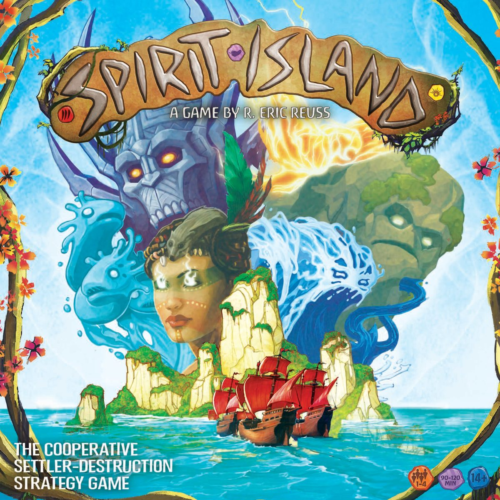
本页为《灵迹岛》(Spirit Island,R. Eric Reuss 设计,Greater Than Games 出版)的官方英文规则书(版本 VER 23.08,32 页)全文翻译,底本为出版社官方发布之规则书 PDF,逐页全文译出,原书页面图随文嵌入——点击任意图片即可放大查看。规则内容归 Greater Than Games / Flat River Group 及版权方所有,译文仅供个人学习查阅。
整理说明:〔图:……〕〔图标〕表示此处为印刷插图/图形符号,非正文文字;〔示例:……〕为原书示例栏的整理标题。术语译法对照(首现括注英文):灵=Spirit、达罕人=Dahan、入侵者=Invader(探索者=Explorer/城镇=Town/城市=City)、枯萎=Blight(级联=Cascade)、恐惧=Fear、恐怖等级=Terror Level、临在=Presence、圣域=Sacred Site、力量=Power(次要/主要/独特力量=Minor/Major/Unique Power、天赋力量=Innate Power、迅捷/迟缓=Fast/Slow)、成长=Growth、回收=Reclaim、肆虐=Ravage、建造=Build、探索=Explore、升级效果=Escalation、对手=Adversary、情景=Scenario、防御=Defend、聚拢=Gather、推离=Push、遗忘=Forget、重复=Repeat、元素=Element(日/月/火/风/水/土/植物/动物)、元素阈值=Elemental Threshold、射程=Range、沿海/内陆=Coastal/Inland、时光流逝=Time Passes。原书 PDF 自带完整文字层,转录以文字层为源、组件与图表页辅以视觉核对;难度表经文字坐标重建与视觉双源核验;译文中数字与数量均照原书逐项核对。
〔图:封面——SPIRIT ISLAND 灵迹岛,岛屿与巨灵插画,R. Eric Reuss 设计,Greater Than Games 出版〕
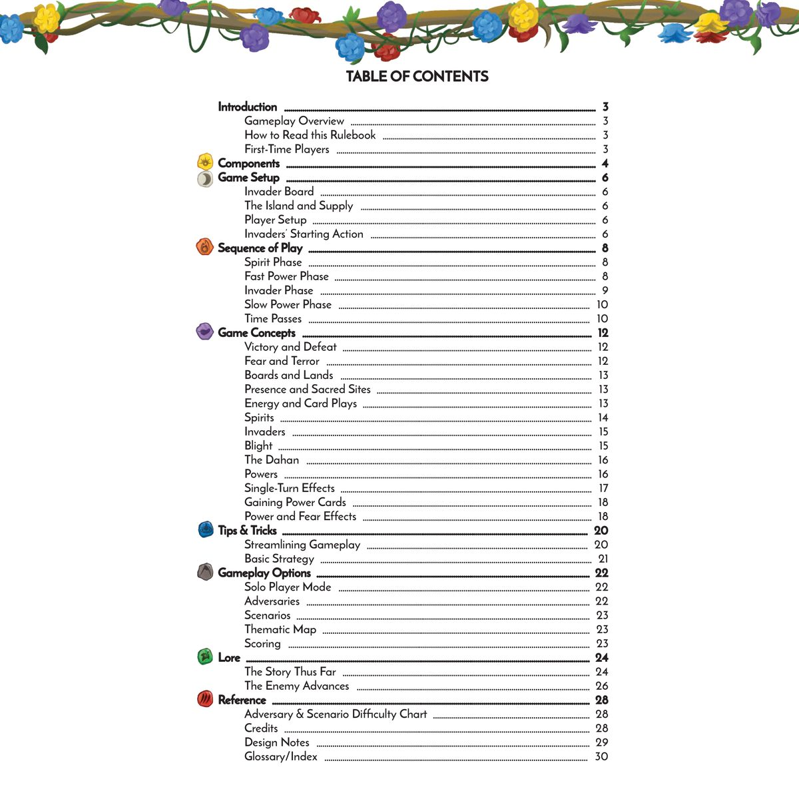
目录
- 游戏简介(Introduction) — 第 3 页
- 玩法概览(Gameplay Overview) — 第 3 页
- 如何使用本规则书(How to Read this Rulebook) — 第 3 页
- 首次游玩的玩家(First-Time Players) — 第 3 页
- 游戏组件(Components) — 第 4 页
- 游戏设置(Game Setup) — 第 6 页 <ul> <li>入侵者版图(Invader Board) — 第 6 页</li> <li>岛屿与补给区(The Island and Supply) — 第 6 页</li> <li>玩家设置(Player Setup) — 第 6 页</li> <li>入侵者的起始行动(Invaders' Starting Action) — 第 6 页</li> </ul>
- 回合流程(Sequence of Play) — 第 8 页 <ul> <li>灵阶段(Spirit Phase) — 第 8 页</li> <li>迅捷力量阶段(Fast Power Phase) — 第 8 页</li> <li>入侵者阶段(Invader Phase) — 第 9 页</li> <li>迟缓力量阶段(Slow Power Phase) — 第 10 页</li> <li>时光流逝(Time Passes) — 第 10 页</li> </ul>
- 游戏概念(Game Concepts) — 第 12 页 <ul> <li>胜利与失败(Victory and Defeat) — 第 12 页</li> <li>恐惧与恐怖等级(Fear and Terror) — 第 12 页</li> <li>板块与地块(Boards and Lands) — 第 13 页</li> <li>临在与圣域(Presence and Sacred Sites) — 第 13 页</li> <li>能量与出牌(Energy and Card Plays) — 第 13 页</li> </ul>
- 灵(Spirits) — 第 14 页
- 入侵者(Invaders) — 第 15 页
- 枯萎(Blight) — 第 15 页
- 达罕人(The Dahan) — 第 16 页
- 力量(Powers) — 第 16 页 <ul> <li>单回合效果(Single-Turn Effects) — 第 17 页</li> <li>获得力量牌(Gaining Power Cards) — 第 18 页</li> <li>力量与恐惧效果(Power and Fear Effects) — 第 18 页</li> </ul>
- 技巧与窍门(Tips & Tricks) — 第 20 页 <ul> <li>让流程更顺畅(Streamlining Gameplay) — 第 20 页</li> <li>基础策略(Basic Strategy) — 第 21 页</li> </ul>
- 玩法选项(Gameplay Options) — 第 22 页 <ul> <li>单人模式(Solo Player Mode) — 第 22 页</li> <li>对手(Adversaries) — 第 22 页</li> <li>情景(Scenarios) — 第 23 页</li> <li>主题地图(Thematic Map) — 第 23 页</li> <li>计分(Scoring) — 第 23 页</li> </ul>
- 背景故事(Lore) — 第 24 页 <ul> <li>迄今为止的故事(The Story Thus Far) — 第 24 页</li> <li>敌人的进击(The Enemy Advances) — 第 26 页</li> </ul>
- 参考(Reference) — 第 28 页 <ul> <li>对手与情景难度表(Adversary & Scenario Difficulty Chart) — 第 28 页</li> <li>制作名单(Credits) — 第 28 页</li> </ul>
- 设计笔记(Design Notes) — 第 29 页
- 术语表/索引(Glossary/Index) — 第 30 页
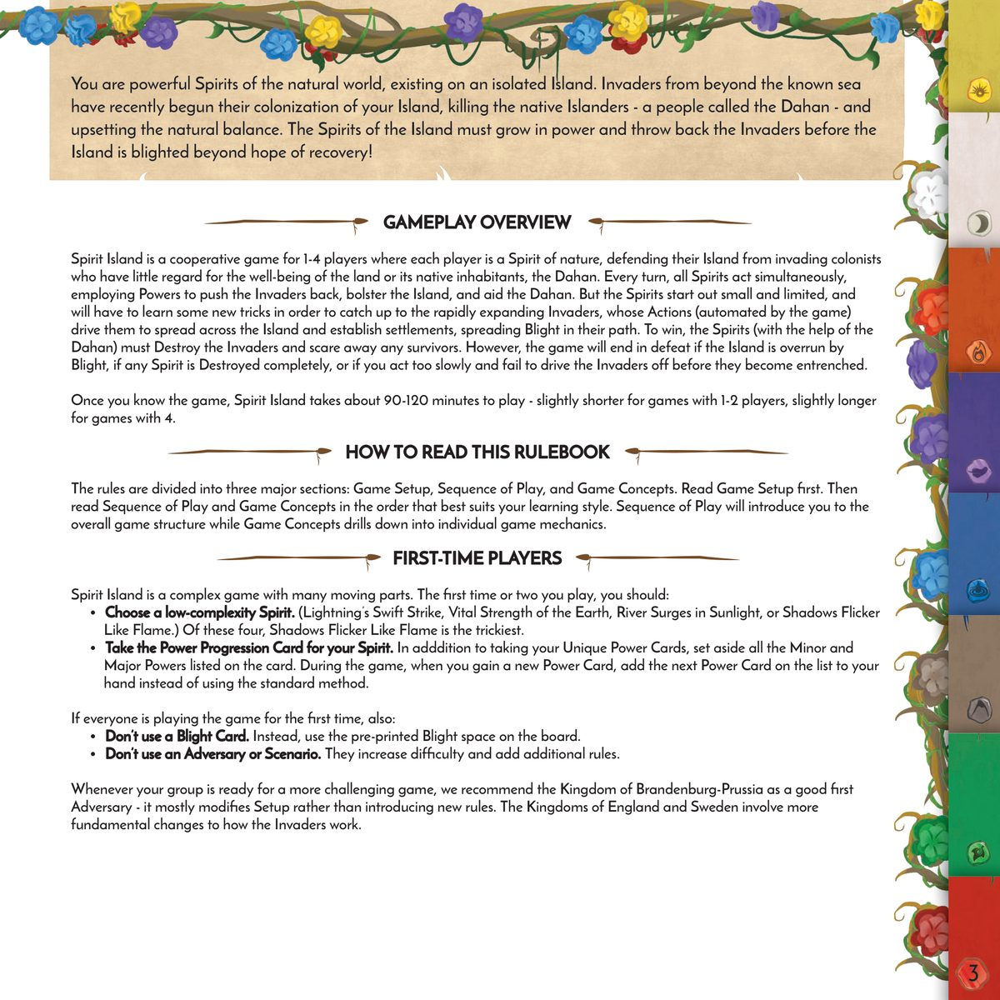
游戏简介
你是自然世界中强大的灵(Spirit),栖居于一座与世隔绝的岛屿之上。来自已知海域之外的入侵者(Invader)新近开始了对你岛屿的殖民,屠戮原住岛民——一支被称为达罕人(Dahan)的民族——并破坏着自然的平衡。岛屿的灵必须不断增强力量,在岛屿被枯萎(Blight)侵蚀到无可挽回之前,将入侵者驱逐出去!
玩法概览
灵迹岛(Spirit Island)是一款 1–4 人合作游戏,每位玩家扮演一位自然之灵,保卫自己的岛屿免遭殖民者入侵——这些殖民者毫不顾及土地与原住民达罕人的福祉。每一回合,所有灵同时行动,运用力量(Power)击退入侵者、加固岛屿、支援达罕人。但灵起初弱小而受限,必须学会新的本领,才能追上扩张迅速的入侵者——入侵者的行动由游戏自动驱动,驱使他们在岛屿上蔓延、建立定居点,并在所到之处散布枯萎。要取得胜利,灵(在达罕人的协助下)必须消灭入侵者并吓走幸存者。反之,若岛屿被枯萎吞没、任何一位灵被彻底消灭,或你们行动太迟缓、未能趁入侵者立足未稳时将其驱逐,游戏即告失败。
熟悉规则后,一局灵迹岛约需 90–120 分钟:1–2 人局稍短,4 人局稍长。
如何使用本规则书
规则分为三个主要部分:游戏设置、回合流程与游戏概念。请先阅读游戏设置,然后按照适合自己学习习惯的顺序阅读回合流程与游戏概念。回合流程将向你介绍游戏的整体结构,而游戏概念则深入讲解各个具体的游戏机制。
首次游玩的玩家
灵迹岛是一款环节繁多的复杂游戏。头一两次游玩时,你应当:
- 选择低复杂度的灵(闪电迅击 Lightning's Swift Strike、大地的生机之力 Vital Strength of the Earth、阳光下的河水奔涌 River Surges in Sunlight、影曳如焰 Shadows Flicker Like Flame)。这四者之中,影曳如焰最不好上手。
- 拿取你的灵对应的力量进阶卡(Power Progression Card)。除了拿取你的独特力量牌(Unique Power Cards)之外,把卡上列出的所有次要力量(Minor Power)与主要力量(Major Power)单独放好。游戏中当你获得新的力量牌时,按清单取下一张牌,而不用标准方法。
如果所有玩家都是首次游玩,还应:
- 不使用枯萎牌(Blight Card),改用版图上预印的枯萎区。
- 不使用对手(Adversary)或情景(Scenario)——它们会提高难度并增加额外规则。
当你们准备好迎接更具挑战性的游戏时,我们推荐以勃兰登堡-普鲁士王国(Kingdom of Brandenburg-Prussia)作为第一个对手——它主要修改游戏设置,几乎不引入新规则。英格兰王国(Kingdom of England)与瑞典王国(Kingdom of Sweden)则会对入侵者的运作方式做出更根本的改变。
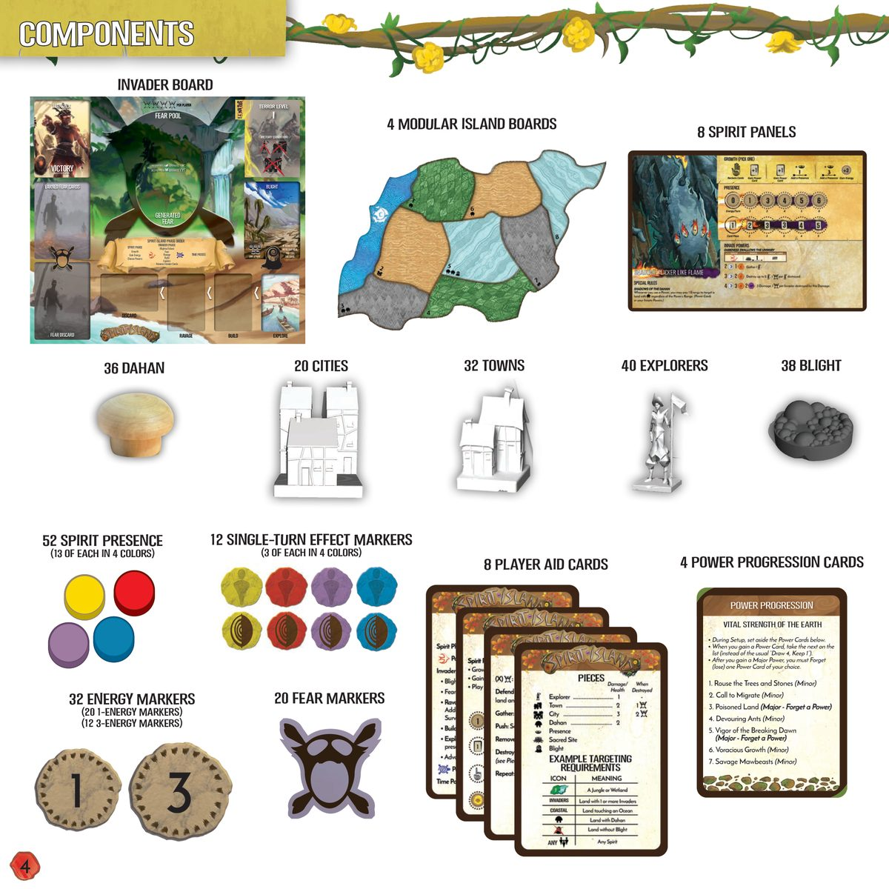
游戏组件
〔图:组件总览,各组件插图配标签如下〕
- 入侵者版图(Invader Board)× 1
- 模块化岛屿板块(Modular Island Board)× 4
- 灵面板(Spirit Panel)× 8
- 达罕人(Dahan)× 36
- 城市(City)× 20
- 城镇(Town)× 32
- 探索者(Explorer)× 40
- 枯萎(Blight)× 38
- 灵的临在(Spirit Presence)× 52(4 种颜色各 13 枚)
- 单回合效果标记(Single-Turn Effect Marker)× 12(4 种颜色各 3 枚)
- 能量标记(Energy Marker)× 32(其中 1 能量标记 × 20、3 能量标记 × 12)
- 恐惧标记(Fear Marker)× 20
- 玩家辅助卡(Player Aid Card)× 8
- 力量进阶卡(Power Progression Card)× 4
〔图:入侵者版图放大图——版图上印有 SPIRIT ISLAND PHASE ORDER(灵迹岛阶段顺序)、SPIRIT PHASE(灵阶段:成长 Growth / 获得能量 Gain Energy / 选择力量 Choose Powers)、INVADER PHASE(入侵者阶段:枯萎岛屿 Blighted Island / 恐惧 Fear / 肆虐 Ravage / 建造 Build / 探索 Explore / 推进入侵者牌 Advance Invader Cards)、TIME PASSES(时光流逝);行动区自左向右为 EXPLORE → BUILD → RAVAGE → DISCARD;右侧为恐惧池(每名玩家 4 枚恐惧标记)、恐惧牌堆区(FEAR DECK / WHEN REVEALED)、已赢得的恐惧牌区(EARNED FEAR CARDS)、恐惧弃牌区(FEAR DISCARD)、胜利区(VICTORY);枯萎区印有警示文字:「若此处枯萎耗尽,你们输掉游戏」,并注明「每名玩家 5 枚枯萎(加 1 枚)」「消灭 1 座城镇产生 1 点恐惧」「消灭 1 座城市产生 2 点恐惧」〕
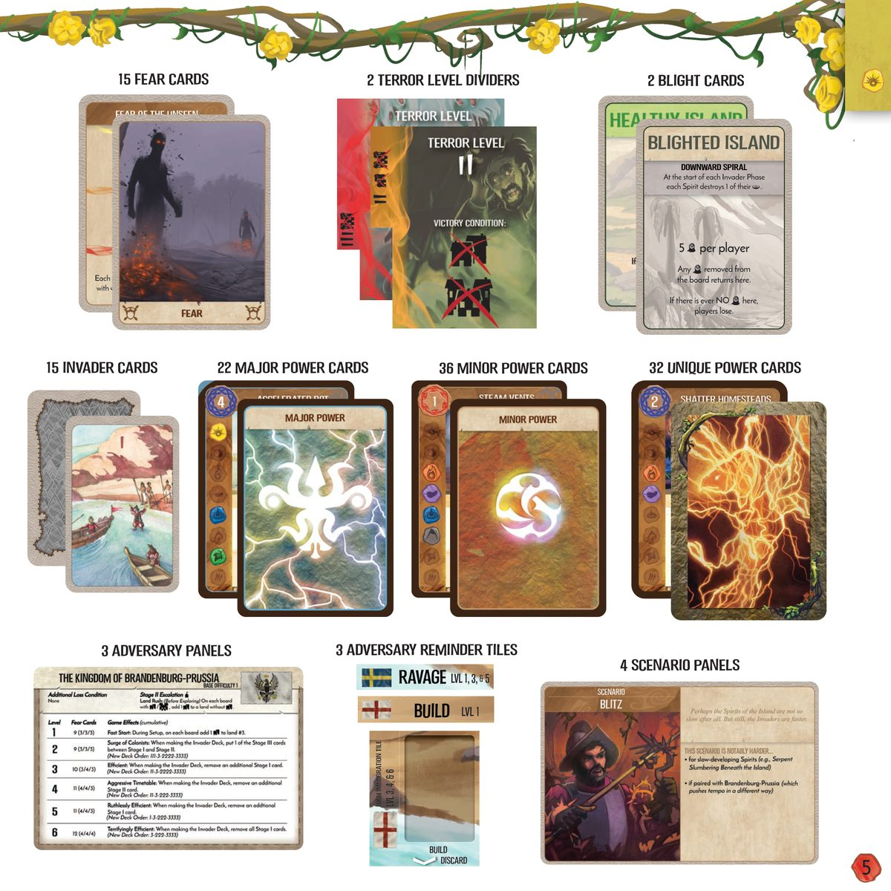
游戏组件(续)
〔图:卡牌与面板类组件总览,各组件插图配标签如下〕
- 恐惧牌(Fear Card)× 15
- 恐怖等级分隔片(Terror Level Divider)× 2
- 枯萎牌(Blight Card)× 2
- 入侵者牌(Invader Card)× 15
- 主要力量牌(Major Power Card)× 22
- 次要力量牌(Minor Power Card)× 36
- 独特力量牌(Unique Power Card)× 32
- 对手面板(Adversary Panel)× 3
- 对手提示片(Adversary Reminder Tile)× 3
- 情景面板(Scenario Panel)× 4
〔图:恐惧牌示例「未见之惧 Fear of the Unseen」——三行效果分别对应三个恐怖等级:每个恐怖等级只使用对应行的效果〕
〔图:枯萎牌两面——「健康岛屿 Healthy Island」面:每名玩家 5 枚枯萎,从版图上移除的枯萎回到此处,若此处枯萎耗尽,玩家落败;「枯萎岛屿 Blighted Island」背面示例「向下螺旋 Downward Spiral」:每个入侵者阶段开始时,每位灵消灭 1 枚自己的临在〕
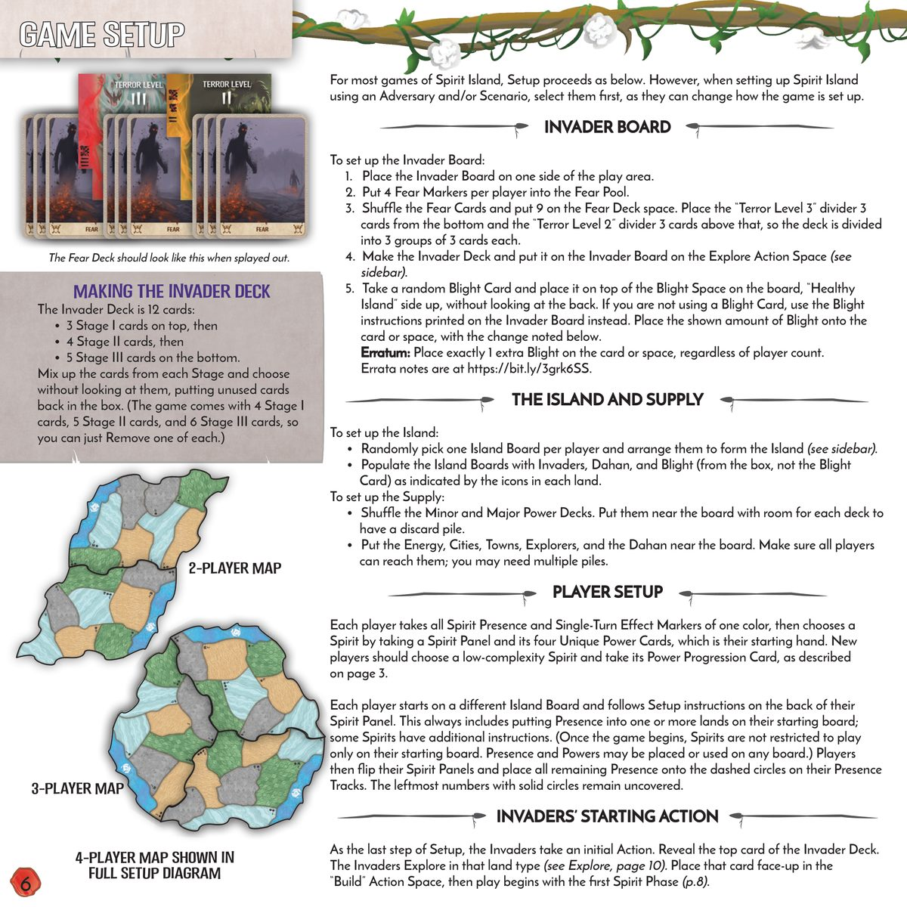
游戏设置
对大多数对局而言,按下述步骤设置。若使用对手(Adversary)和/或情景(Scenario)进行游戏,请先选定它们——它们可能改变设置方式。
入侵者版图
设置入侵者版图:
- 将入侵者版图放在游戏区一侧。
- 每名玩家向恐惧池(Fear Pool)放入 4 枚恐惧标记。
- 洗匀恐惧牌,在恐惧牌堆区放 9 张。「恐怖等级 3」分隔片从牌底数起第 3 张处插入,「恐怖等级 2」分隔片再往上数 3 张处插入,使牌堆被分成 3 组、每组 3 张牌。
- 组建入侵者牌堆(Invader Deck),放到入侵者版图的探索(Explore)行动区上(见侧栏)。
- 随机取一张枯萎牌,「健康岛屿」面朝上放在版图的枯萎区上,不要看背面。若不使用枯萎牌,则改用入侵者版图上印制的枯萎说明。按所示数量将枯萎放到牌或枯萎区上,并按下述勘误调整。
勘误(Erratum):无论玩家数多少,都在牌或枯萎区上额外恰好多放 1 枚枯萎。
勘误说明见 https://bit.ly/3grk6SS 。
岛屿与补给区
设置岛屿:
- 每名玩家随机拿取一块岛屿板块,拼合成岛屿(见侧栏)。
- 依照每个地块中的图标,从盒中(而非枯萎牌上)取入侵者、达罕人与枯萎,摆放到岛屿板块上。
设置补给区:
- 洗匀次要力量牌堆与主要力量牌堆。放在版图附近,并为每个牌堆留出弃牌区空间。
- 将能量、城市、城镇、探索者与达罕人放在版图附近,确保所有玩家都够得着;必要时可以分成多堆。
玩家设置
每位玩家拿取同一颜色的全部临在(Spirit Presence)与单回合效果标记,然后选择一位灵:拿取对应的灵面板及其四张独特力量牌——这就是起始手牌。新手玩家应选择低复杂度的灵并拿取其力量进阶卡(见第 3 页)。
每位玩家在不同的岛屿板块上开局,并按灵面板背面的设置说明操作。其中必定包括:在自己起始板块的一个或多个地块放置临在;部分灵另有附加说明。(游戏开始后,灵不再限于在自己的起始板块上行动——临在与力量可以放置或使用在任何板块上。)随后玩家把灵面板翻到正面,将剩余全部临在放到临在轨道(Presence Track)的虚线圆圈上。最左侧实心圆圈的数字保持露出(不被覆盖)。
入侵者的起始行动
作为设置的最后一步,入侵者进行一次初始行动:翻开入侵者牌堆顶的牌,入侵者在所示地形的地块上探索(见第 10 页「探索」)。将该牌面朝上放入「建造」行动区,然后游戏从第一个灵阶段(第 8 页)开始。
构建入侵者牌堆(Making the Invader Deck)
入侵者牌堆共 12 张牌:
- 3 张阶段一(Stage I)牌在最上,然后
- 4 张阶段二(Stage II)牌,然后
- 5 张阶段三(Stage III)牌在最底。
把每个阶段的牌分别混洗,不看牌面抽取所需数量,未用到的牌放回盒中。(游戏共配有 4 张阶段一牌、5 张阶段二牌、6 张阶段三牌,所以每种阶段各移除 1 张即可。)
〔图:摊开后的恐惧牌堆示意——9 张恐惧牌被两张恐怖等级分隔片分成三组,每组 3 张〕
〔图:2 人地图 / 3 人地图 / 4 人地图的板块拼合示意——4 人地图即第 7 页完整设置图所用的布局〕
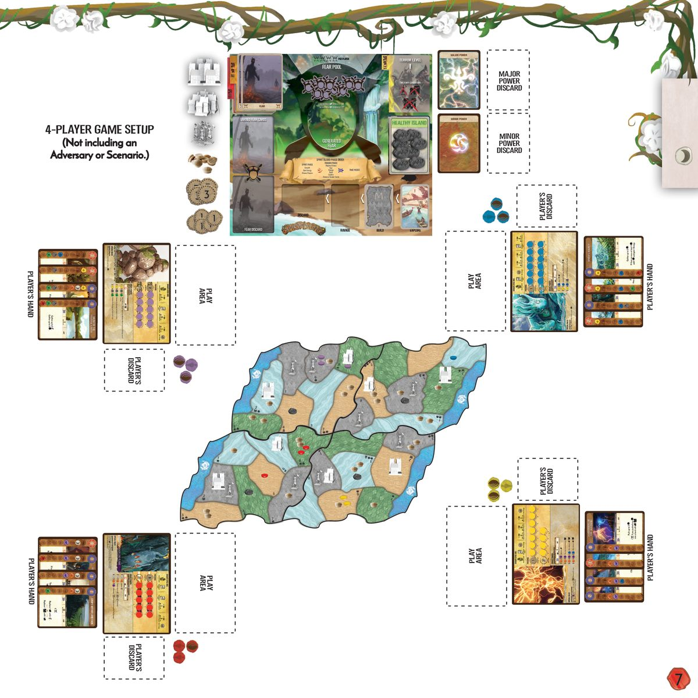
〔图:4 人游戏完整设置全景图(不含对手与情景)——入侵者版图横置于桌面一端:左侧为恐惧池与对手卡区,中部依次排列行动区 EXPLORE → BUILD → RAVAGE → DISCARD,右侧为恐惧牌堆区、已赢得的恐惧牌区与枯萎牌(健康岛屿面朝上);四角各有一名玩家的灵面板,每名玩家身旁有手牌区(PLAYER'S HAND)、出牌区(PLAY AREA)与个人弃牌堆(PLAYER'S DISCARD);桌面中央为四块岛屿板块拼成的岛屿;入侵者版图旁另有主要力量弃牌堆(MAJOR POWER DISCARD)与次要力量弃牌堆(MINOR POWER DISCARD)〕
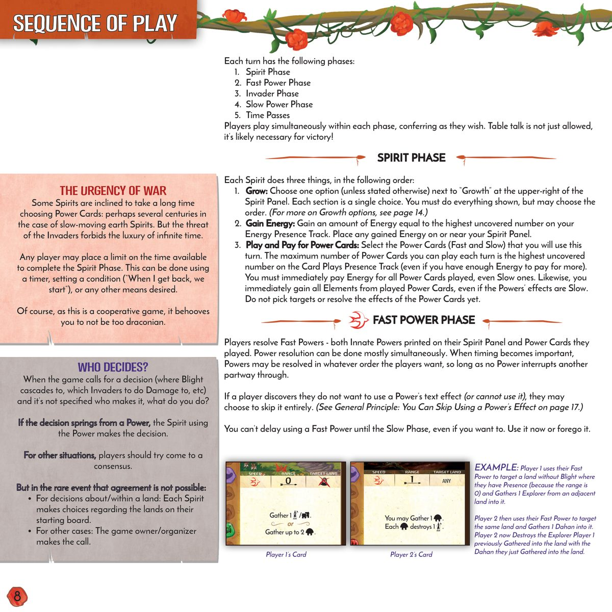
回合流程
每个回合依次包含以下阶段:
- 灵阶段(Spirit Phase)
- 迅捷力量阶段(Fast Power Phase)
- 入侵者阶段(Invader Phase)
- 迟缓力量阶段(Slow Power Phase)
- 时光流逝(Time Passes)
各阶段内玩家同时行动,可随时商议。桌上讨论不仅被允许,而且很可能是取胜所必需的!
战争的紧迫(The Urgency of War)
有些灵在选择力量牌时倾向于花很长时间——对迟缓的大地之灵来说或许是几个世纪。但入侵者的威胁容不得无限的时间。任何玩家都可以为灵阶段设定时限:可以用计时器,可以设一个条件(「我回来的时候,我们就开始」),或任何想要的方式。
当然,这是合作游戏,别做得太苛刻。
谁来做决定?(Who Decides?)
当游戏需要做出决定(枯萎级联到哪、对哪些入侵者造成伤害等)而未指明由谁决定时,怎么办?
若决定源于某个力量,由使用该力量的灵做决定。
其他情况下,玩家应尽量达成共识。
在极少数无法达成一致的情形下:
- 涉及某地块内/关于某地块的决定:每位灵对自己起始板块上的地块做出选择。
- 其他情形:由游戏的主人/组织者裁定。
示例: 玩家 1 使用迅捷力量,指定一个自己有临在(因为射程为 0)且没有枯萎的地块为目标,并从相邻地块聚拢(Gather) 1 名探索者进入该地块。
玩家 2 随后使用迅捷力量指定同一地块为目标,聚拢 1 名达罕人进入该地块。
玩家 2 现在可以消灭那名被玩家 1 聚拢进该地块的探索者——用的正是刚被聚拢过来的达罕人。
〔图:示例配图——玩家 1 的牌与玩家 2 的牌〕
灵阶段
每位灵依次做三件事:
- 成长(Grow):在灵面板右上方「成长」区选择一个选项(另有说明除外)。每个分区是一次单独选择。必须执行分区中所示的全部内容,但可自选顺序。(成长选项详见第 14 页。)
- 获得能量(Gain Energy):获得等同于你能量临在轨道上最左侧未被覆盖数字的能量。把获得的能量放在灵面板上或旁边。
- 打出并支付力量牌(Play and Pay for Power Cards):选择本回合要使用的力量牌(迅捷与迟缓)。每回合可打出的力量牌数量上限,是出牌临在轨道上最左侧未被覆盖的数字(即使你的能量足够支付更多也不行)。你必须立刻为所有打出的力量牌支付能量,迟缓牌也一样。同样,你也立刻获得所打出力量牌的全部元素——即便力量的效果是迟缓的。此时还不要选择目标,也不要结算力量牌的效果。
迅捷力量阶段
玩家结算迅捷力量——包括灵面板上印制的天赋力量(Innate Power)与自己打出的力量牌。力量结算大体可以同时进行。当先后次序变得重要时,玩家可以按任何想要的顺序结算力量,只要不让某个力量在半途中打断另一个力量。
如果玩家发现自己不想(或不能)使用某个力量的文字效果,可以选择完全跳过它。(见第 17 页通则:你可以不使用力量的效果。)
迅捷力量不能推迟到迟缓阶段使用,即使你想这么做也不行——要么现在用,要么放弃。
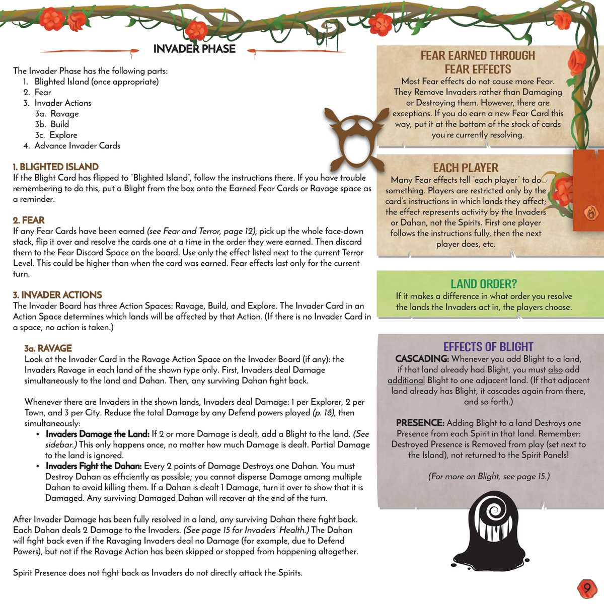
入侵者阶段
入侵者阶段依次包含以下部分:
- 枯萎岛屿(Blighted Island)(一旦触发)
- 恐惧(Fear)
- 入侵者行动(Invader Actions)
- 3a. 肆虐(Ravage) <ul> <li>3b. 建造(Build)</li> <li>3c. 探索(Explore)</li> </ul>
- 推进入侵者牌(Advance Invader Cards)
1. 枯萎岛屿 若枯萎牌已翻到「枯萎岛屿」面,执行其上的指示。如果你老是忘记这一步,可以从盒中取一枚枯萎放到已赢得的恐惧牌区或肆虐区上作提醒。
2. 恐惧 若已赢得任何恐惧牌(见第 12 页「恐惧与恐怖等级」),拿起整叠背面朝上的牌,翻面并按赢得的先后顺序逐张结算,然后弃到版图上的恐惧弃牌区。只使用当前恐怖等级对应的效果——它可能比赢得该牌时更高。恐惧效果仅持续到当前回合结束。
3. 入侵者行动 入侵者版图上有三个行动区:肆虐、建造与探索。行动区中的入侵者牌决定该行动影响哪些地块。(若某行动区没有入侵者牌,则不执行该行动。)
3a. 肆虐(Ravage) 查看入侵者版图肆虐行动区中的入侵者牌(若有):入侵者只在所示类型的地块上肆虐。首先,入侵者同时对该地块与达罕人造成伤害;然后,幸存的达罕人反击。
只要所示地块中有入侵者,入侵者便造成伤害:每名探索者 1 点、每座城镇 2 点、每座城市 3 点。从总伤害中扣除已打出的一切「防御」(Defend)力量(第 18 页),然后同时结算:
- 入侵者伤害地块:若造成了 2 点或更多伤害,向该地块添加 1 枚枯萎(见侧栏)。无论伤害多少,这只发生一次。对地块的部分伤害忽略不计。
- 入侵者攻击达罕人:每 2 点伤害消灭 1 名达罕人。你必须以尽可能高效的方式消灭达罕人,不得把伤害分散到多名达罕人身上以避免击杀。若某名达罕人受到 1 点伤害,将其翻面表示已受伤。所有幸存的受伤达罕人在回合结束时恢复。
入侵者的伤害在某个地块完全结算后,该地块幸存的达罕人进行反击:每名达罕人对入侵者造成 2 点伤害。(入侵者的生命值见第 15 页。)即使肆虐的入侵者未造成任何伤害(例如因防御力量),达罕人也会反击;但若肆虐行动被完全跳过或阻止,则不反击。
灵的临在不会反击,因为入侵者不会直接攻击灵。
恐惧效果赢得的恐惧(Fear Earned Through Fear Effects)
大多数恐惧效果不会进一步产生恐惧:它们是「移除」入侵者,而非伤害或消灭。但也有例外。若你以此方式赢得了新的恐惧牌,把它放到你正在结算的那叠牌的最下面。
「每位玩家」(Each Player)
许多恐惧效果指示「每位玩家」做某事。玩家只受牌面指示对地块的限制;该效果代表的是入侵者或达罕人的活动,而非灵的行动。第一位玩家先完整执行指示,然后下一位玩家执行,以此类推。
地块顺序?(Land Order?)
若入侵者行动地块的结算先后会造成差别,由玩家决定。
枯萎的效果(Effects of Blight)
级联(Cascading):每当你向某地块添加枯萎时,若该地块已有枯萎,你必须再向一个相邻地块添加 1 枚额外的枯萎。(若那个相邻地块也已有枯萎,级联会从那里再次发生,以此类推。)
临在:向地块添加枯萎,会消灭该地块中每位灵的各 1 枚临在。切记:被消灭的临在是从游戏中移除(放到岛屿旁边),而不是放回灵面板!
(枯萎详见第 15 页。)
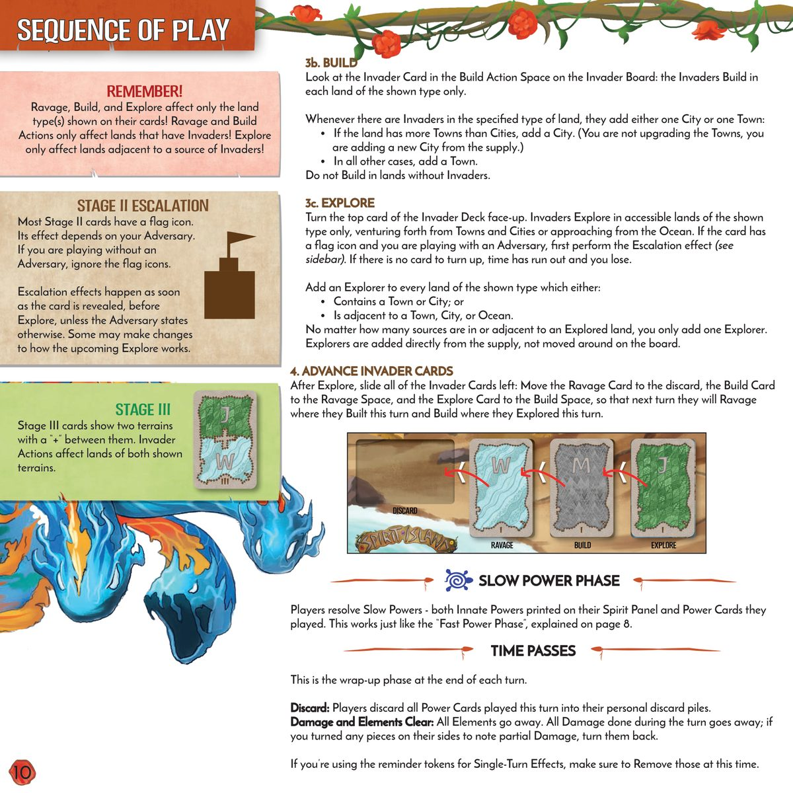
3b. 建造(Build) 查看入侵者版图建造行动区中的入侵者牌:入侵者只在所示类型的地块上建造。
只要所示类型的地块中有入侵者,他们便添加一座城市或一座城镇:
- 若该地块的城镇数多于城市数,添加一座城市。(这不是升级原有城镇,而是从补给区添加一座新的城市。)
- 其他所有情况,添加一座城镇。
不在没有入侵者的地块建造。
3c. 探索(Explore) 翻开入侵者牌堆顶的牌。入侵者只在所示类型的可及地块上探索——从城镇与城市向外进发,或从海洋逼近。若该牌带有旗帜图标且你们在使用对手,先执行升级(Escalation)效果(见侧栏)。若无牌可翻,时间耗尽,你们落败。
向每个满足以下任一条件的所示类型地块添加 1 名探索者:
- 含有城镇或城市;或
- 与某个城镇、城市或海洋相邻。
无论一个被探索的地块之中或相邻之处有多少个来源,都只添加 1 名探索者。
探索者直接从补给区添加,并不在版图上移动。
4. 推进入侵者牌 探索之后,所有入侵者牌向左移动一格:肆虐区的牌移入弃牌堆,建造区的牌移入肆虐区,探索区的牌移入建造区。这样,下一回合入侵者将在本回合建造过的地块肆虐、在本回合探索过的地块建造。
迟缓力量阶段
玩家结算迟缓力量——包括灵面板上印制的天赋力量与自己打出的力量牌。结算方式与第 8 页的「迅捷力量阶段」完全相同。
时光流逝(Time Passes)
这是每个回合结束时的收尾阶段。
- 弃牌:玩家将本回合打出的所有力量牌弃入各自的个人弃牌堆。
- 伤害与元素清空:所有元素消失。本回合造成的所有伤害消失;若你曾把棋子翻侧表示部分伤害,把它们翻回来。
- 若你在使用单回合效果的提示标记,此时记得移除它们。
切记!(Remember!)
肆虐、建造和探索只影响其牌所示类型的地块!肆虐与建造只影响有入侵者的地块!探索只影响与入侵者来源相邻(或同格)的地块!
阶段二升级(Stage II Escalation)
大多数阶段二牌带有旗帜图标。其效果取决于你们使用的对手。若未使用对手,忽略旗帜图标。
升级效果在牌被翻开时立即发生,先于探索——除非对手另有说明。有些升级会改变接下来探索的方式。
阶段三(Stage III)
阶段三牌展示两种地形,中间以「+」相连。入侵者行动影响两种所示地形的地块。
〔图:行动区牌流转示意——EXPLORE → BUILD → RAVAGE → DISCARD,入侵者牌每个回合向左移动一格〕
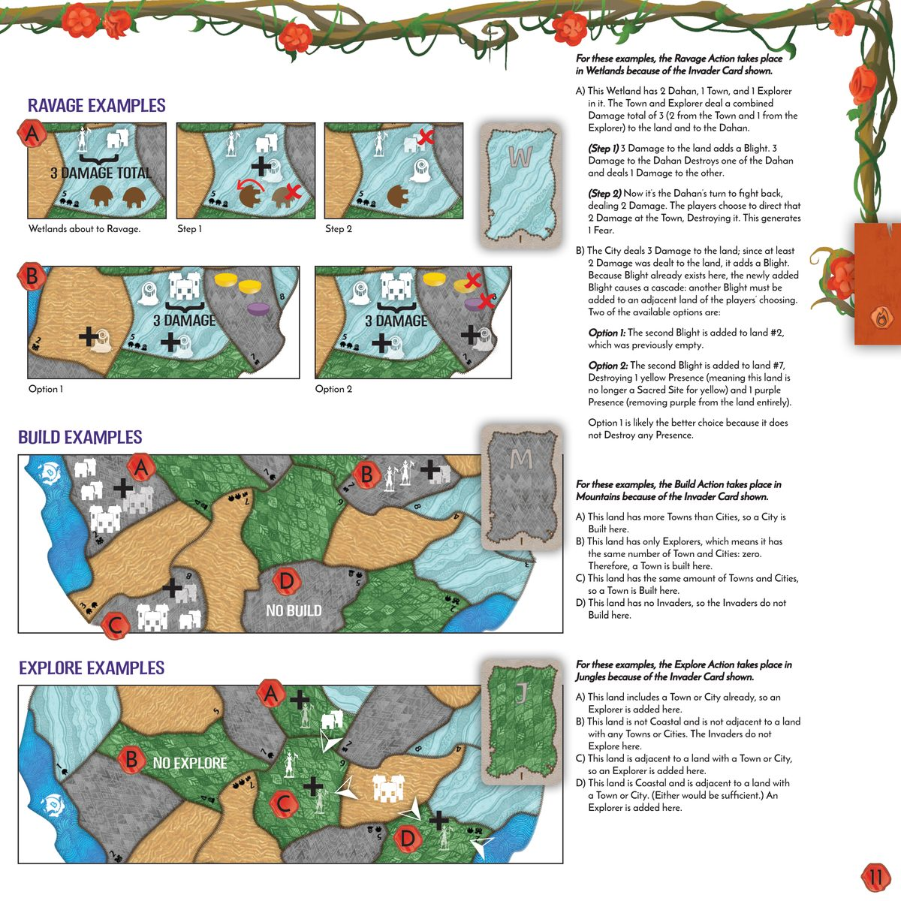
行动示例
肆虐示例
〔示例:因所示的入侵者牌,肆虐行动发生在湿地〕
- A) 该湿地有 2 名达罕人、1 座城镇和 1 名探索者。城镇与探索者合计对地块与达罕人共造成 3 点伤害(城镇 2 点、探索者 1 点)。 <ul> <li>(第 1 步)对地块的 3 点伤害添加 1 枚枯萎;对达罕人的 3 点伤害消灭其中 1 名,并对另 1 名造成 1 点伤害。</li> <li>(第 2 步)轮到达罕人反击,造成 2 点伤害。玩家选择将这 2 点伤害指向城镇,将其消灭——这产生 1 点恐惧。</li> </ul>
- B) 城市对地块造成 3 点伤害;由于对地块造成的伤害达到 2 点或更多,添加 1 枚枯萎。因为该地块已有枯萎,新添加的枯萎引发级联:必须再向一个由玩家选择的相邻地块添加 1 枚枯萎。两个可行选项: <ul> <li><strong>选项 1</strong>:第二枚枯萎添加到 2 号地块——它此前是空的。</li> <li><strong>选项 2</strong>:第二枚枯萎添加到 7 号地块——消灭 1 枚黄色临在(意味着该地块不再是黄色的圣域)和 1 枚紫色临在(把紫色彻底逐出该地块)。</li> <li>选项 1 多半更好,因为它不会消灭任何临在。</li> </ul>
建造示例
〔示例:因所示的入侵者牌,建造行动发生在山地〕
- A) 该地块的城镇多于城市,因此在此添加一座城市。
- B) 该地块只有探索者——城镇与城市数量相同:都是零。因此在此添加一座城镇。
- C) 该地块的城镇与城市数量相同,因此在此添加一座城镇。
- D) 该地块没有入侵者,因此入侵者不在此建造。
探索示例
〔示例:因所示的入侵者牌,探索行动发生在丛林〕
- A) 该地块已有城镇或城市,因此在此添加 1 名探索者。
- B) 该地块不沿海,也不与任何含城镇或城市的地块相邻。入侵者不在此探索。
- C) 该地块与一个含城镇或城市的地块相邻,因此在此添加 1 名探索者。
- D) 该地块沿海,且与一个含城镇或城市的地块相邻(任一条件已足够)。在此添加 1 名探索者。
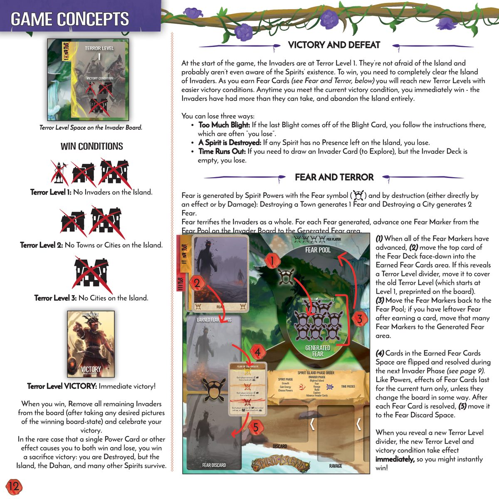
游戏概念
胜利与失败
游戏开始时入侵者处于恐怖等级(Terror Level) 1:他们不害怕这座岛,甚至多半没察觉到灵的存在。要获胜,你需要把入侵者彻底清除出岛屿。随着你赢得恐惧牌(见下文「恐惧与恐怖等级」),你将达到恐怖等级更宽松的胜利条件。只要满足当前的胜利条件,你立即获胜——入侵者已忍无可忍,彻底放弃这座岛。
- 恐怖等级 1:岛上没有入侵者。
- 恐怖等级 2:岛上没有城镇或城市。
- 恐怖等级 3:岛上没有城市。
- 恐怖等级胜利:立即获胜!
获胜时,(在对胜局版图拍照留念之后)移除版图上所有残余的入侵者,庆祝你们的胜利。
在极罕见的情况下,若单张力量牌或其他效果让你同时获胜与落败,你赢得一场牺牲式胜利:你被消灭了,但岛屿、达罕人与许多其他灵得以幸存。
失败有三种方式:
- 枯萎过多:若最后一枚枯萎离开枯萎牌,执行其指示——通常是「你们落败」。
- 一位灵被消灭:若任何一位灵在岛上没有临在了,你们落败。
- 时间耗尽:若你需要(为探索)翻入侵者牌,但入侵者牌堆已空,你们落败。
恐惧与恐怖等级
恐惧(Fear)由带恐惧图标的灵之力产生,也由摧毁带来(直接被效果消灭或因伤害被消灭):消灭 1 座城镇产生 1 点恐惧,消灭 1 座城市产生 2 点恐惧。
恐惧吓阻的是入侵者这个整体。每产生 1 点恐惧,把 1 枚恐惧标记从入侵者版图上的恐惧池移入「已产生恐惧」区。
〔图:入侵者版图恐惧流转五步示意——(1) 当所有恐惧标记都已前进后,(2) 将恐惧牌堆顶的牌背面朝下移入「已赢得的恐惧牌」区。若因此翻出恐怖等级分隔片,将它移去覆盖旧的恐怖等级(初始为版图预印的等级 1)。(3) 把恐惧标记移回恐惧池;若赢得恐惧牌后还有剩余恐惧,把等量的恐惧标记移入「已产生恐惧」区。(4) 「已赢得的恐惧牌」区的牌在下一个入侵者阶段翻面结算(见第 9 页)。与力量一样,恐惧牌的效果仅持续当前回合,除非它以某种方式改变了版图。每张恐惧牌结算后,(5) 将它移入恐惧弃牌区。翻出新的恐怖等级分隔片时,新的恐怖等级与胜利条件立即生效——你可能瞬间获胜!〕
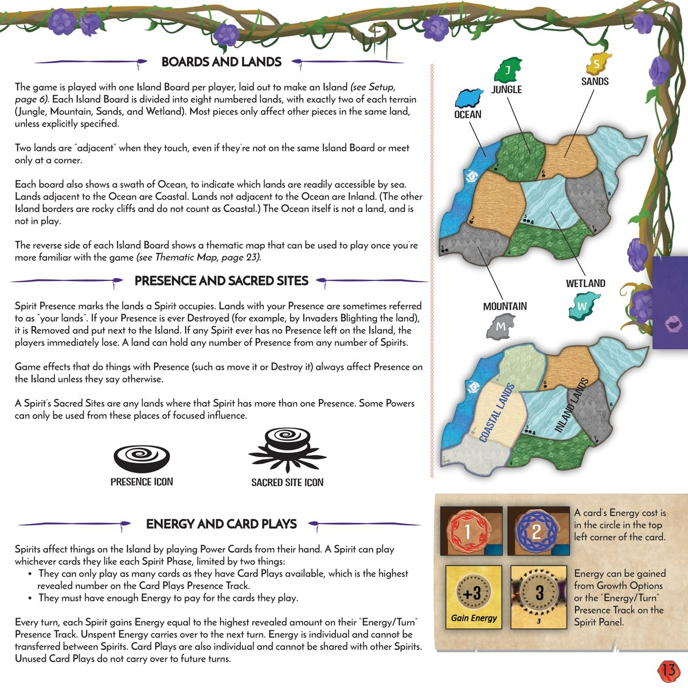
板块与地块
游戏每位玩家使用一块岛屿板块,拼合为岛屿(见第 6 页设置)。每块岛屿板块分为八个编号地块,每种地形(丛林、山地、沙地、湿地)恰好各两块。除非明确说明,大多数棋子只影响同一地块内的其他棋子。
两个地块「相邻」指它们相接——即使不在同一岛屿板块上、或只在角落相触也算。
每块板块还绘有一片海洋,用以标示哪些地块易于从海上抵达。与海洋相邻的地块是沿海(Coastal)地块,不与海洋相邻的地块是内陆(Inland)地块。(岛屿的其他边缘是陡峭悬崖,不算沿海。)海洋本身不是地块,不在游戏之内。
每块岛屿板块的背面是一张主题地图,供熟悉游戏后使用(见第 23 页「主题地图」)。
临在与圣域
灵的临在(Spirit Presence)标记灵所占的地块。含有你临在的地块有时被称为「你的地块」。若你的临在被消灭(例如入侵者使地块枯萎),它是被移除并放到岛屿旁边。若任何一位灵在岛上没有临在了,玩家立即落败。一个地块可以容纳任意数量灵的任意数量临在。凡涉及临在的游戏效果(如移动或消灭),除非另有说明,始终作用于岛上的临在。
一位灵的圣域(Sacred Site)是该灵拥有多于 1 枚临在的任意地块。部分力量只能从这些影响力凝聚之处使用。
能量与出牌
灵通过从手牌打出力量牌来影响岛屿上的事物。每位灵在每个灵阶段可以随意选择打出的牌,只受两件事限制:
- 出牌数量不得超过其可用出牌数(Card Plays)——即出牌临在轨道上最左侧未被覆盖的数字。
- 必须有足够的能量支付所打出的牌。
每回合,每位灵获得等同于其「能量/回合」临在轨道上最左侧未被覆盖数字的能量。未用完的能量保留到下一回合。能量归灵个人所有,不能在灵之间转移。出牌数同样归个人,不能与其他灵共享。未使用的出牌数不保留到未来回合。
〔图:临在图标与圣域图标;五种地形示例——海洋、丛林、沙地、山地、湿地;沿海地块与内陆地块的判别〕
力量牌的能量费用在牌左上角的圆圈中。能量可来自成长选项或灵面板上的「能量/回合」临在轨道。
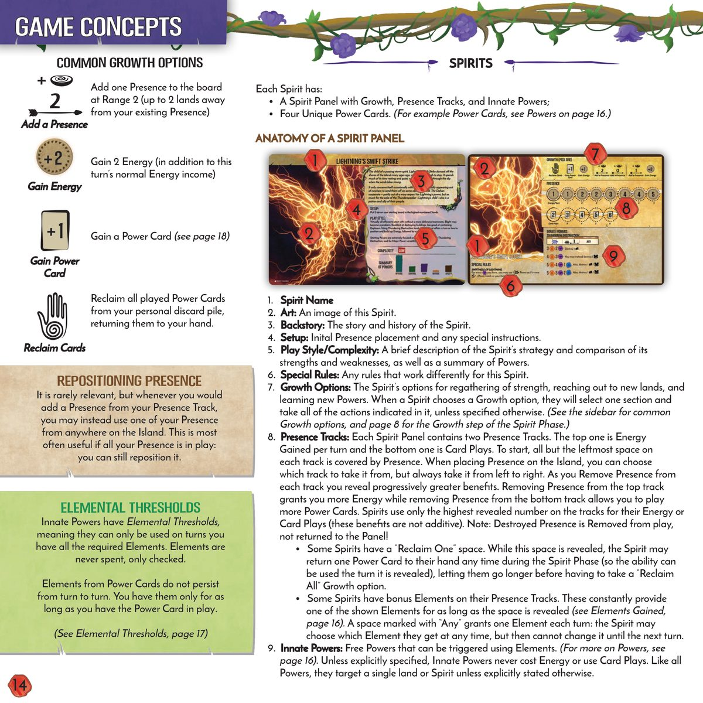
灵
每位灵拥有:
- 一块灵面板,包含成长选项、临在轨道与天赋力量;
- 四张独特力量牌。(力量牌示例见第 16 页「力量」。)
灵面板解剖
- 灵名
- 插画:该灵的形象。
- 背景故事:灵的传说与历史。
- 设置:初始临在的放置位置及任何特殊指示。
- 玩法风格/复杂度:对该灵策略的简述、优劣势比较,以及力量概览。
- 特殊规则:仅对该灵生效的不同规则。
- 成长选项:灵积蓄力量、伸向新地块、学习新力量的选择。当灵选择一个成长选项时,选定一个分区并执行其中所示的全部行动,另有说明除外。(常见成长选项见侧栏;灵阶段的成长步骤见第 8 页。)
- 临在轨道:每块灵面板有两条临在轨道,上面一条是每回合获得的能量,下面一条是出牌数。开局时,每条轨道上除最左格之外的全部格位都被临在覆盖。向岛屿放置临在时,你可以自行选择从哪条轨道取,但每条轨道总是从左往右取。随着你从轨道上移除临在,逐渐揭开更强的收益:从上轨移除临在让你获得更多能量,从下轨移除临在让你能打出更多力量牌。灵只使用轨道上最左侧未被覆盖的数字来决定能量或出牌数(收益不叠加)。注意:被消灭的临在是从游戏中移除,不放回灵面板!
- 部分灵的轨道上有「回收一张」(Reclaim One)格位。该格位未被覆盖期间,灵可以在灵阶段的任意时刻把一张力量牌从弃牌堆收回手牌(因此该能力在被揭开的当回合即可使用),从而推迟不得不选择「全部回收」成长的时点。 <ul> <li>部分灵的临在轨道上有奖励元素。只要格位未被覆盖,它就持续提供 1 个所示元素(见第 16 页「获得的元素」)。标有「任意」(Any) 的格位每回合提供 1 个元素:灵可在此后任何时刻选择获得哪个元素,但一旦确定,到下回合之前不可更改。</li> </ul>
- 天赋力量(Innate Powers):可以用元素触发的免费力量。(详见第 16 页「力量」。)除非明确说明,天赋力量从不消耗能量,也不占用出牌数。与所有力量一样,除非明确说明,它们以单个地块或单位灵为目标。
常见成长选项
- 添加临在:在射程 2 以内(距你现有临在最多 2 个地块)向版图添加 1 枚临在。
- 获得能量:获得 2 点能量(在本回合正常能量收入之外)。
- 获得力量牌:获得 1 张力量牌(见第 18 页)。
- 回收:把你打出的力量牌全部从个人弃牌堆收回手牌。
重新布置临在(Repositioning Presence)
虽然很少用到:每当你从临在轨道添加临在时,可以改为使用你在岛上任意位置的 1 枚临在。当你的临在全部在场上时这最有用——你仍能重新布置它们。
元素阈值(Elemental Thresholds)
天赋力量有元素阈值,意味着只有在你本回合拥有全部所需元素的那些回合才能使用。元素从不被消耗,只作核对。力量牌提供的元素不会回合间保留:只在力量牌处于场上的期间拥有。(见第 17 页「元素阈值」。)
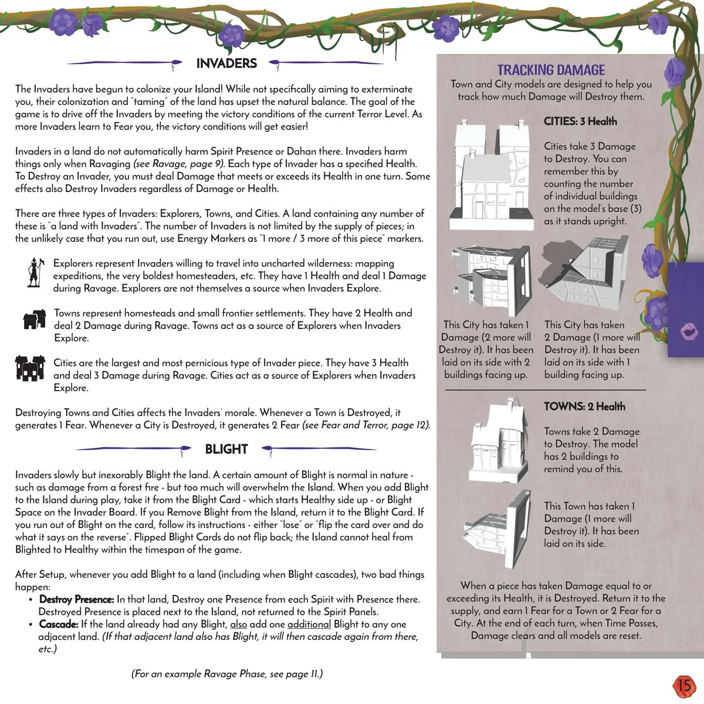
入侵者
入侵者已开始殖民你的岛屿!他们并非刻意要消灭你们,但对土地的殖民与「驯化」破坏了自然的平衡。游戏的目标是通过满足当前恐怖等级的胜利条件来驱逐入侵者。入侵者越是学会惧怕你们,胜利条件就越宽松!
地块中的入侵者不会自动伤害那里的灵的临在或达罕人。入侵者只在肆虐时造成伤害(见第 9 页「肆虐」)。每类入侵者有指定的生命值(Health)。要消灭一名入侵者,你必须在一回合内造成达到或超过其生命值的伤害。部分效果也可以无视伤害与生命值直接消灭入侵者。
入侵者分三类:探索者、城镇与城市。含有任意数量上述棋子的地块即「有入侵者的地块」。入侵者数量不受配件限制;万一用尽,用能量标记充当「再多 1 个/再多 3 个该棋子」的标记。
- 探索者(Explorer) 代表愿意深入未知荒野的入侵者:测绘远征队、最胆大的拓荒者等。生命值 1,肆虐时造成 1 点伤害。探索者本身不作为入侵者探索的来源。
- 城镇(Town) 代表家园与边疆小聚落。生命值 2,肆虐时造成 2 点伤害。城镇是入侵者探索时的来源。
- 城市(City) 是最大也最恶毒的入侵者棋子。生命值 3,肆虐时造成 3 点伤害。城市也是入侵者探索时的来源。
消灭城镇与城市会打击入侵者的士气:每消灭 1 座城镇产生 1 点恐惧,每消灭 1 座城市产生 2 点恐惧(见第 12 页「恐惧与恐怖等级」)。
枯萎
入侵者缓慢而无情地使土地枯萎。一定程度的枯萎在自然界是常态——比如野火留下的伤害——但太多就会压垮岛屿。游戏中向岛屿添加枯萎时,从枯萎牌(初始「健康岛屿」面朝上)或入侵者版图的枯萎区取。若你把枯萎从岛屿上移除,把它放回枯萎牌。若牌上的枯萎用尽,执行其指示——要么「落败」,要么「把牌翻面,执行背面的指示」。枯萎牌一旦翻面就不会翻回;在本局的时间尺度内,岛屿无法从枯萎痊愈为健康。
设置完成后,每当你向地块添加枯萎(包括级联时),两件坏事发生:
- 消灭临在:在该地块中,消灭在场每位灵的各 1 枚临在。被消灭的临在放到岛屿旁边,不放回灵面板。
- 级联:若该地块已有任何枯萎,再向任意一个相邻地块添加 1 枚枯萎。(若那个相邻地块也有枯萎,级联会从那里再次发生,以此类推。)
(肆虐阶段示例见第 11 页。)
伤害的记录(Tracking Damage)
城镇与城市的立体模型设计得便于记录多少伤害能消灭它们。
城市:3 生命。消灭城市需要 3 点伤害。可以这样记:模型底座上立着时数得到 3 栋独立建筑。这座城市已受 1 点伤害(再 2 点即被消灭):侧放、2 栋建筑朝上。这座城市已受 2 点伤害(再 1 点即被消灭):侧放、1 栋建筑朝上。
城镇:2 生命。消灭城镇需要 2 点伤害。模型有 2 栋建筑帮你记住。这座城镇已受 1 点伤害(再 1 点即被消灭):已侧放。
当棋子受到达到或超过其生命值的伤害时,它被消灭:放回补给区,并因城镇得 1 点恐惧、因城市得 2 点恐惧。每个回合结束、时光流逝时,伤害清除,所有模型复原。
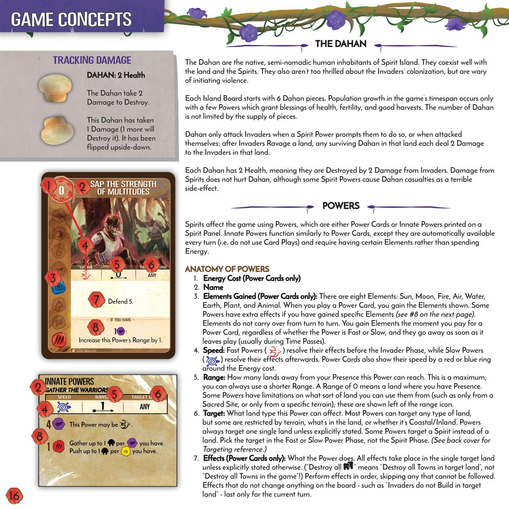
达罕人
达罕人是灵迹岛原住的半游牧人类。他们与土地和灵融洽共处,也不太乐见入侵者的殖民,但对率先动手心存犹豫。
每块岛屿板块开局有 6 枚达罕人棋子。在本游戏的时间跨度内,人口增长只发生在少数赐予健康、丰饶与好收成的力量中。达罕人数量不受配件限制。
达罕人只在灵的力量促使他们、或自身受到攻击时才攻击入侵者:入侵者肆虐某地块后,该地块幸存的每名达罕人对该地块中的入侵者各造成 2 点伤害。
每名达罕人生命值 2,即被入侵者的 2 点伤害消灭。灵的伤害不会伤害达罕人——尽管某些灵的力量会以可怕的副作用造成达罕人伤亡。
达罕人:2 生命
消灭达罕人需要 2 点伤害。这名达罕人已受 1 点伤害(再 1 点即被消灭):已翻倒放置。
力量
灵用力量影响游戏。力量分为力量牌与印在灵面板上的天赋力量。天赋力量的运作与力量牌类似,区别在于它每回合自动可用(即不占用出牌数),且需要凑齐特定元素而非支付能量。
力量解剖
- 能量费用(仅力量牌)
- 名称
- 获得的元素(仅力量牌):共有八种元素——日(Sun)、月(Moon)、火(Fire)、风(Air)、水(Water)、土(Earth)、植物(Plant)与动物(Animal)。打出力量牌时,你获得牌面所示的元素。部分力量在你凑齐特定元素时有额外效果(见下页第 8 条)。元素不跨回合保留:你在支付力量牌费用的那一刻获得元素,无论该力量迅捷或迟缓;当它离场(通常在时光流逝时)元素即消失。
- 速度:迅捷力量(闪电图标)的效果在入侵者阶段之前结算,迟缓力量(月亮图标)的效果在入侵者阶段之后结算。力量牌的能量费用圆圈也以红圈或蓝圈标示速度。
- 射程(Range):该力量能触及距你临在多少个地块。这是上限——你总可以用更短的射程。射程 0 指你拥有临在的地块。部分力量对使用位置有限制(如只能从圣域出发、或只能从特定地形出发);这些限制显示在射程图标左侧。
- 目标(Target):该力量能影响什么地块。大多数力量可以指定任意类型的地块,但有些受地形、地块内容物或沿海/内陆限制。除非明确说明,力量总是只以一个单一地块为目标。部分力量以灵而非地块为目标。在迅捷或迟缓力量阶段选目标,不要在灵阶段选。(目标参考见封底/第 32 页。)
- 效果(仅力量牌):力量做什么。除非明确说明,一切效果都发生在那个单一目标地块内。(「消灭全部城镇」指「消灭目标地块内的全部城镇」,不是「消灭全场的全部城镇」!)按顺序执行效果,跳过无法执行的部分。不改变版图状态的效果——如「入侵者不在目标地块建造」——仅持续当前回合。
元素
- 日:白昼、光明、炎热、主宰、号令、恒常
- 月:黑夜、循环、黑暗、梦境、变化
- 火:炽热、愤怒、毁灭、欲望、剧烈的改变
- 风:疾风、天空、声响、距离、迅捷、诡诈、思绪
- 水:河流、流动、丰饶、共情、疗愈、疾病
- 土:大地、力量、恒常、静止、坚韧
- 植物:葱郁、生长、缠绕、再生
- 动物:野兽、人类、血、身体、生、死
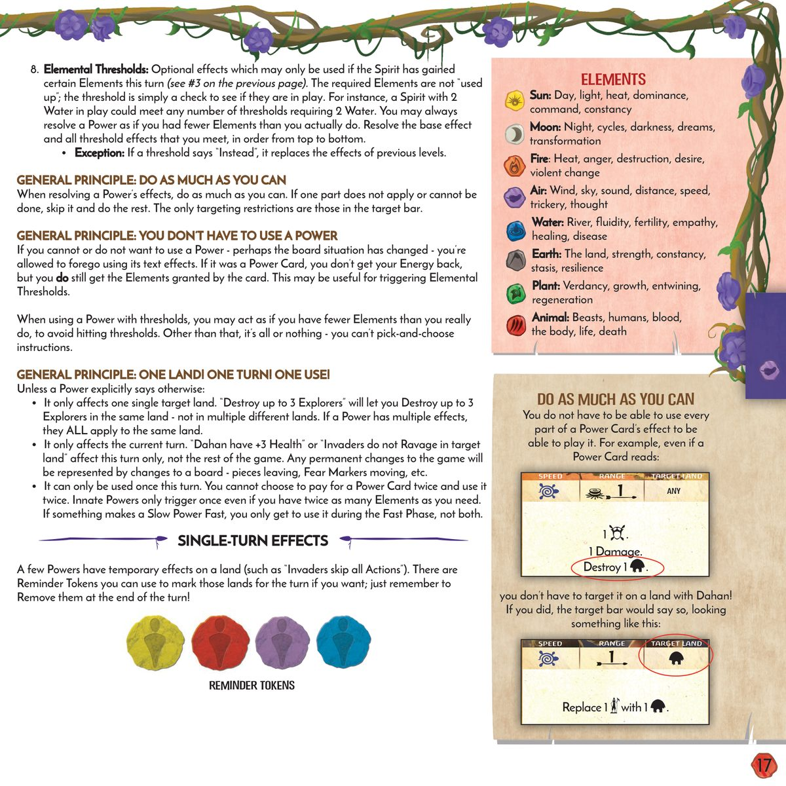
- 元素阈值:只有当灵本回合已获得特定元素时才可使用的可选效果(见上页第 3 条)。所需元素不会被「用掉」——阈值只是核对它们是否在场。例如,场上有 2 个水的灵可以同时满足任意多个需要 2 水的阈值。你永远可以按比实际更少的元素来结算力量。按从上到下的顺序结算基础效果与你满足的所有阈值效果。
- 例外:若阈值写着「改为」(Instead),它取代之前等级的效果。
通则:能做多少做多少(Do As Much As You Can)
结算力量的效果时,能做多少做多少。若某部分不适用或无法执行,跳过它并执行其余部分。唯一的指向限制是目标栏中的那些。
通则:你可以不使用力量(You Don't Have to Use a Power)
如果你不能或不想使用某个力量——也许版图局势变了——你可以放弃使用其文字效果。若是力量牌,能量不退还,但牌提供的元素照常获得。这对触发元素阈值可能有用。
使用带阈值的力量时,你可以表现得像拥有的元素比实际更少,以避开阈值。除此之外,力量是用还是不用——不能挑挑拣拣其中几条指示。
通则:一个地块!一个回合!一次使用!(One Land! One Turn! One Use!)
除非力量明确说明:
- 它只影响单一一个目标地块。「消灭至多 3 名探索者」指在同一地块内消灭至多 3 名探索者——不是分处多个地块。若力量有多个效果,它们全部作用于同一个地块。
- 它只影响当前回合。「达罕人 +3 生命值」或「入侵者不在目标地块肆虐」只影响本回合,不是游戏余下时间。任何对游戏的永久改变都会以版图变化呈现——棋子离场、恐惧标记移动等。
- 它本回合只能使用一次。你不能为一张力量牌支付两次费用并使用两次。即使你的元素多达所需的两倍,天赋力量也只触发一次。若某个效果把迟缓力量变为迅捷,你只能在迅捷阶段使用它,而非两个阶段各一次。
单回合效果
少数力量对地块产生暂时效果(如「入侵者跳过所有行动」)。有提示标记(Reminder Token)可供你在这些地块上做本回合标记——只要记得在回合结束时移除它们!
提示标记的正面/背面:一面是单回合效果标记,另一面是防御(Defend)标记(见第 18 页)。
「能做多少做多少」示例
你不必能用到力量牌效果的每一部分才能打出它。比如,即使一张力量牌写着(带达罕人移动的效果),你也不必指向有达罕人的地块!
如果必须如此,目标栏会明确写出来,长这样:(带「地块中有达罕人」限制的目标栏示意)。
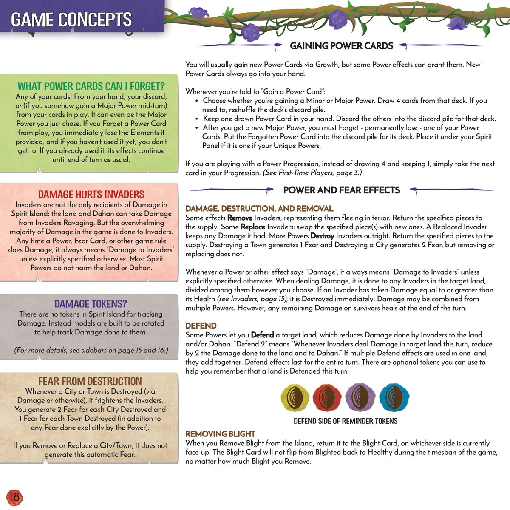
获得力量牌
你通常通过成长获得新的力量牌,部分力量效果也可以给予。新的力量牌一律进入你的手牌。
每当被指示「获得一张力量牌」时:
- 选择获得次要力量还是主要力量。从对应牌堆抽 4 张。必要时把该牌堆的弃牌洗回。
- 保留 1 张抽到的力量牌在手,其余弃入该牌堆的弃牌堆。
- 获得新的主要力量后,你必须遗忘(Forget)——永久失去——你的一张力量牌。被遗忘的力量牌放入其牌堆的弃牌堆;若它是你的独特力量,放到你的灵面板下面。
若你在使用力量进阶,不抽 4 留 1,直接按顺序拿取进阶清单的下一张牌。(见第 3 页「首次游玩的玩家」。)
我可以遗忘哪些力量牌?
你的任何牌!手牌、弃牌堆、或(若你在一回合中途获得主要力量)场上已打出的牌。甚至可以是刚选到的那张主要力量。若你把场上的力量牌遗忘,立即失去它提供的元素;若还没用过它,就再也用不到了。若已经用过,其效果照常持续到回合结束。
力量与恐惧效果
伤害、消灭与移除
部分效果「移除」(Remove) 入侵者,代表他们吓得逃走:把指定棋子放回补给区。部分效果「替换」(Replace) 入侵者:把指定棋子换成新棋子。被替换的入侵者保留其所受的伤害。更多力量直接「消灭」(Destroy) 入侵者:把指定棋子放回补给区。消灭 1 座城镇产生 1 点恐惧、消灭 1 座城市产生 2 点恐惧,但移除或替换不产生。
每当力量或其他效果提到「伤害」(Damage),除非明确说明,一律指「对入侵者的伤害」。造成伤害时,伤害施加于目标地块中的任意入侵者,由你任意分配。若入侵者受到达到或超过其生命值的伤害(见第 15 页「入侵者」),立即被消灭。来自多个力量的伤害可以叠加。但幸存者身上的残余伤害在回合结束时治愈。
防御(Defend)
部分力量让你防御目标地块,减少入侵者对地块和/或达罕人造成的伤害。「防御 2」指「本回合入侵者在目标地块造成伤害时,对地块与达罕人的伤害各减少 2 点」。多个防御效果作用于同一地块时相互叠加。防御效果持续整个回合。有可选标记帮助记住地块本回合受防御。
移除枯萎
当你从岛屿移除枯萎时,把它放回枯萎牌当前朝上的一面。无论你移除多少枯萎,枯萎牌都不会在本局时间内从枯萎面翻回健康面。
伤害打的是入侵者
入侵者不是灵迹岛中伤害的唯一承受者:土地与达罕人也会在入侵者肆虐时受伤。但游戏中绝大多数伤害是对入侵者造成的。任何力量、恐惧牌或其他规则提到「伤害」时,除非明确说明,一律指「对入侵者的伤害」。大多数灵的力量不会伤害土地或达罕人。
没有伤害标记?
灵迹岛没有记录伤害用的标记。模型的造型本身可以翻侧摆放,帮助记录其受到的伤害。(细节见第 15、16 页侧栏。)
摧毁带来的恐惧(Fear from Destruction)
每当城市或城镇被消灭(无论经由伤害还是其他方式),都会吓到入侵者:每消灭 1 座城市产生 2 点恐惧、1 座城镇产生 1 点恐惧(在力量明确产生的恐惧之外)。若你只是移除或替换城市/城镇,不产生这种自动恐惧。
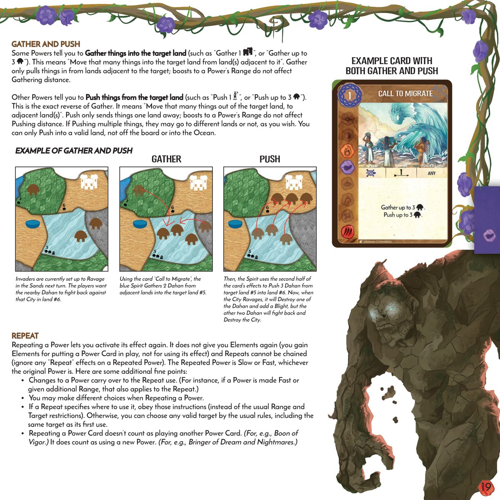
聚拢与推离
部分力量让你把东西聚拢(Gather)进目标地块(如「聚拢 1 名探索者」或「聚拢至多 3 名达罕人」)。这指「从与目标地块相邻的地块,把相应数量的东西移入目标地块」。聚拢只从目标地块的相邻地块往里拉;力量射程的加成不影响聚拢距离。
另一些力量让你把东西从目标地块推离(Push)(如「推离 1 名探索者」或「推离至多 3 名探索者」)。这与聚拢恰好相反:指「把相应数量的东西移出目标地块,送到相邻地块」。推离只把东西送出至一个地块之外;力量射程的加成不影响推离距离。推离多枚棋子时,可以随意送往相同或不同的地块。只能推入合法地块,不能推出版图、也不能推进海洋。
重复(Repeat)
重复一个力量是让它的效果再次生效。它不会再次给你元素(元素在力量牌进入场上的那一刻获得,而非使用效果时获得),且重复不能连锁(忽略被重复力量上的任何「重复」效果)。被重复的力量是迟缓还是迅捷,跟随原力量。还有几点细则:
- 对力量的改变会延续到重复使用。(例如,力量被改为迅捷或获得额外射程,重复使用同样适用。)
- 重复使用时可以做出不同的选择。
- 若重复效果指定了使用地点,按其指示执行(取代通常的射程与目标限制)。否则,你可按通常规则选择任意合法目标——包括与第一次相同的目标。
- 重复力量牌不算再打出一张力量牌(对「活力之赠」这类力量而言),但算使用一个新力量(对「梦魇之引」这类力量而言)。
聚拢与推离示例
入侵者下回合将在沙地肆虐。玩家希望附近的达罕人对抗 6 号地块的城市。
蓝色灵使用「迁徙的呼唤」:先从相邻地块把 2 名达罕人聚拢进目标 5 号地块;再使用该卡效果的另一半,把 3 名达罕人从目标 5 号地块推离进 6 号地块。现在,当城市肆虐时,它会消灭 1 名达罕人并添加 1 枚枯萎,但另外两名达罕人会反击并消灭这座城市。
〔图:示例配图——「聚拢」箭头把达罕人移入目标地块、「推离」箭头把达罕人送往相邻地块;下方为同时含聚拢与推离的效果牌示例〕
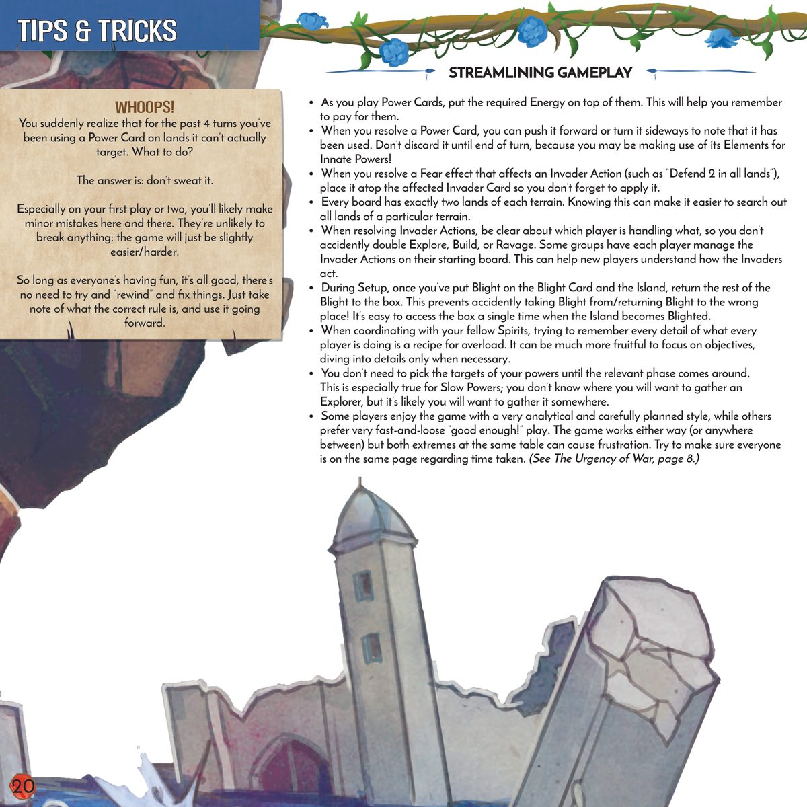
技巧与窍门
Oops,搞砸了!(Whoops!)
你突然发现,过去 4 个回合你一直把一张力量牌用在了它其实指向不了的地块上。怎么办?
答案是:别放在心上。
尤其头一两次游戏,你们难免犯些小错。它们不太会毁掉什么——游戏只会稍稍变易或变难。只要大家都玩得开心,就没什么问题,不需要「倒带」修复。记住正确的规则,今后照着做就行。
让流程更顺畅
- 打出力量牌时,把所需能量压在牌上,帮你记得付费。
- 结算一张力量牌后,可以把它前推或横放,表示已经用过。回合结束前先别弃掉——你可能还要用它的元素来触发天赋力量!
- 结算影响入侵者行动的恐惧效果(如「所有地块防御 2」)时,把它压在受影响的入侵者牌上,免得忘记执行。
- 每块板块每种地形恰好两个地块。知道这一点,找齐特定地形的地块会容易得多。
- 结算入侵者行动时,明确谁负责哪部分,免得重复探索/建造/肆虐。有的团队让每位玩家管理自己起始板块上的入侵者行动——这也能帮新手理解入侵者如何行动。
- 设置时,把枯萎放到枯萎牌与岛屿上之后,把余下的枯萎收回盒中。这能防止从错误的地方取枯萎、把枯萎放回错误的地方!岛屿枯萎化时开一次盒就好。
- 与同伴协调时,试图记住每位玩家在做的每个细节必然过载。聚焦目标、必要时再深入细节,往往更有成效。
- 不必提前为力量选定目标,到相应阶段再选即可。迟缓力量尤其如此——你不知道会想把探索者聚拢到哪里,但多半会想把它聚到某处。
- 有的玩家喜欢精密分析、谨慎规划的玩法,有的喜欢大开大合「差不多就行」。两种风格(及其间任意)都玩得转,但同一桌同时出现两个极端可能令人懊恼。确保大家对用时长短达成共识。(见第 8 页「战争的紧迫」。)
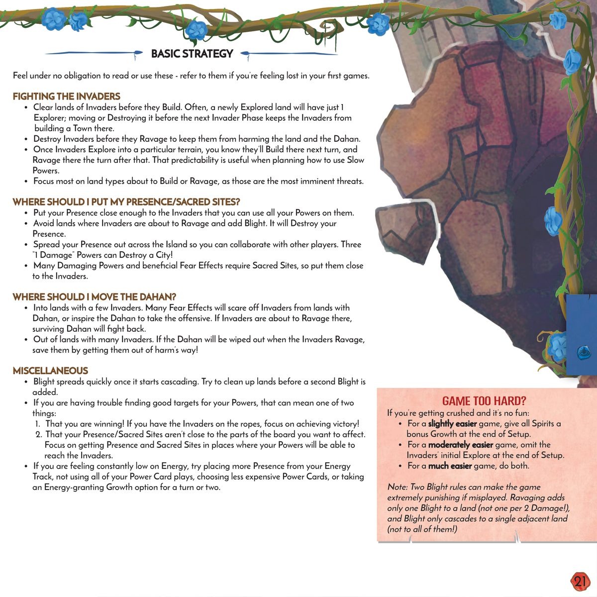
基础策略
完全不必阅读或照做——只是在你头几局感到迷茫时供参考。
对抗入侵者
- 趁入侵者建造之前清空地块。新探索的地块往往只有 1 名探索者;在下个入侵者阶段前移走或消灭他,入侵者就无法在那里建造城镇。
- 趁入侵者肆虐之前消灭他们,免得他们伤害土地与达罕人。
- 入侵者一旦探索进某地形,你就知道他们下回合会在那里建造、再下回合在那里肆虐。这种可预测性对规划迟缓力量很有用。
- 最优先关注即将建造或肆虐的地形——那是最迫近的威胁。
临在/圣域该放在哪?
- 放得离入侵者够近,让你的力量都够得着他们。
- 避开即将被肆虐、即将添加枯萎的地块——那会消灭你的临在。
- 把临在铺展到全岛各处,便于与其他玩家协作。三个「1 点伤害」的力量加起来就能消灭一座城市!
- 许多伤害类力量与有利的恐惧效果需要圣域,所以圣域要贴近入侵者。
达罕人该移去哪?
- 移入入侵者少的地块。许多恐惧效果会把入侵者从有达罕人的地块吓走,或激励达罕人主动出击。若入侵者即将在那里肆虐,幸存的达罕人会反击。
- 移出入侵者多的地块。若达罕人会在肆虐中被赶尽杀绝,就把他们先撤到安全地带!
杂项
- 枯萎一旦开始级联,蔓延极快。尽量在第二枚枯萎被添加前清理地块。
- 若你总找不到好的力量目标,可能是两种情况之一:
- 你们正在赢!若入侵者已被逼入绝境,专注于达成胜利!
- 你的临在/圣域离你想影响的区域不够近。专注把临在与圣域铺到力量够得着入侵者的地方。
- 若你总觉得能量紧张,试着从能量轨道多放临在、别用满出牌数、选更便宜的力量牌,或接连两回合选给能量的成长选项。
游戏太难?(Game Too Hard?)
如果你们被打得毫无乐趣:
- 想简单一点:设置结束后,给每位灵一次额外成长。
- 想再简单一点:跳过设置末尾入侵者的那次初始探索。
- 想简单很多:两样都做。
注意:两条枯萎规则若玩错会让游戏变得极度严苛——肆虐只向地块添加 1 枚枯萎(不是每 2 点伤害 1 枚!),枯萎级联也只波及一个相邻地块(不是全部!)
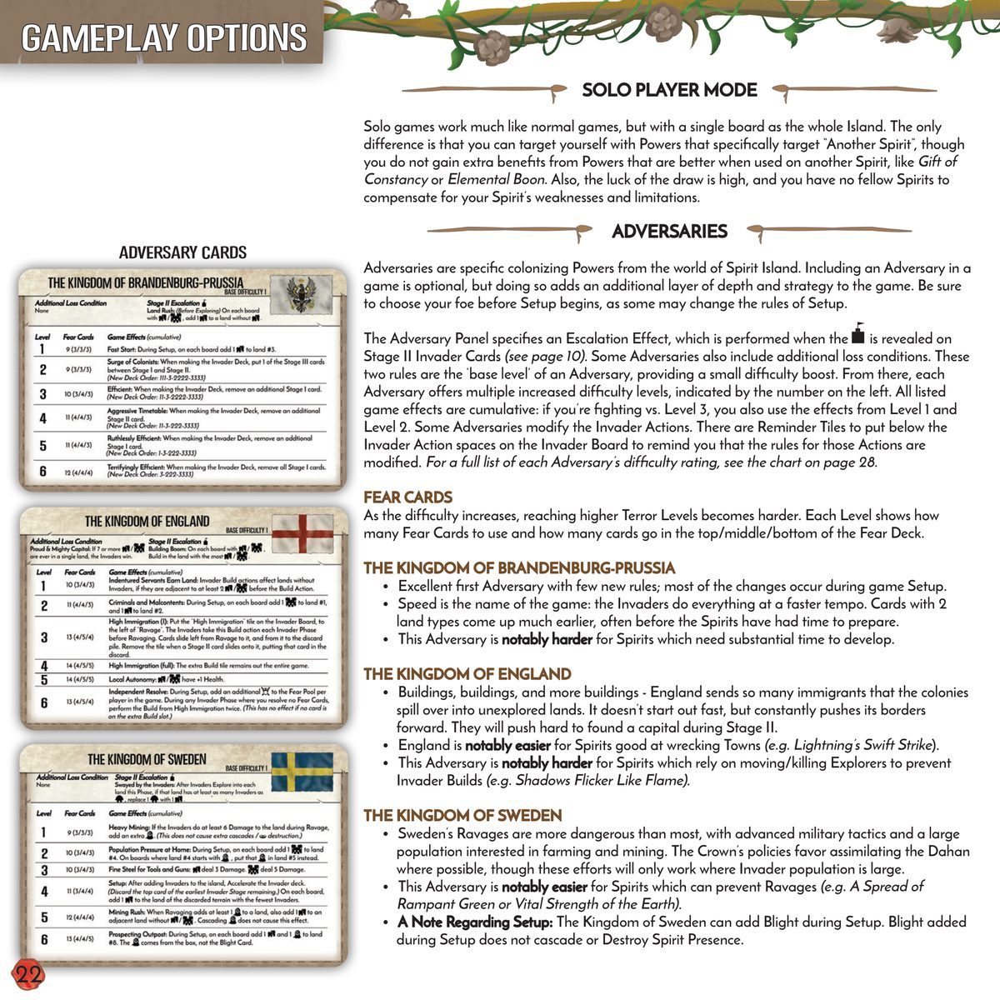
玩法选项
单人模式
单人游戏与常规游戏基本相同,只是整座岛屿只有一块板块。唯一的区别是:你可以把指定「另一位灵」的力量用在自己身上,但从「对其他灵使用更优」的力量(如恒常之赠、元素恩泽)中得不到额外收益。此外,抽牌运气影响很大,也没有同伴灵来弥补你这位灵的短板与局限。
对手
对手(Adversary)是灵迹岛世界中具体的殖民强权。使用对手是可选项,但会为游戏增添一层深度与策略。务必在设置开始前选定对手——有些对手会改变设置规则。
对手面板载有一个升级效果(Escalation Effect),在阶段二入侵者牌上的旗帜图标被翻开时执行(见第 10 页)。部分对手还附带额外的失败条件。这两条规则是对手的「基础等级」,提供小幅难度提升。在此基础上,每个对手提供多个逐级递增的难度,以左侧数字标示。所有列出的游戏效果累积生效:若你挑战等级 3,同时适用等级 1 与等级 2 的效果。部分对手修改入侵者行动——配有提示片,放在入侵者版图相应行动区下方,提醒你该行动规则已被修改。各对手完整难度对照见第 28 页图表。
恐惧牌
随难度提高,达到更高恐怖等级变得更难。每个等级标明使用多少张恐惧牌,以及恐惧牌堆上/中/下各放几张。
勃兰登堡-普鲁士王国(The Kingdom of Brandenburg-Prussia)
- 极佳的首个对手,新规则很少;大部分改动发生在游戏设置阶段。
- 一切围绕「快」:入侵者的一切都以更快的节奏推进。双地形的牌提早很多出现,常常在灵尚未准备好之前。
- 该对手对需要长时间发育的灵明显更难。
英格兰王国(The Kingdom of England)
- 建筑,建筑,还是建筑——英格兰送来如此多的移民,以至于殖民地溢出到未探索的土地上。它起步不快,但不断向前推进边界。阶段二期间他们会全力建立首府。
- 英格兰对擅长拆城镇的灵(如闪电迅击)明显更易。
- 该对手对依赖移动/击杀探索者来阻止入侵者建造的灵(如影曳如焰)明显更难。
瑞典王国(The Kingdom of Sweden)
- 瑞典的肆虐比多数对手更凶险:军事战术先进,还有大批热衷新垦与采矿的移民。王室政策倾向尽可能同化达罕人,但只在入侵者人口庞大的地方才行得通。
- 该对手对能阻止肆虐的灵(如蔓延之绿、大地的生机之力)明显更易。
- 关于设置:瑞典可能在设置阶段添加枯萎。设置阶段添加的枯萎不级联、也不消灭灵的临在。
〔图:对手面板与对手提示片示意〕
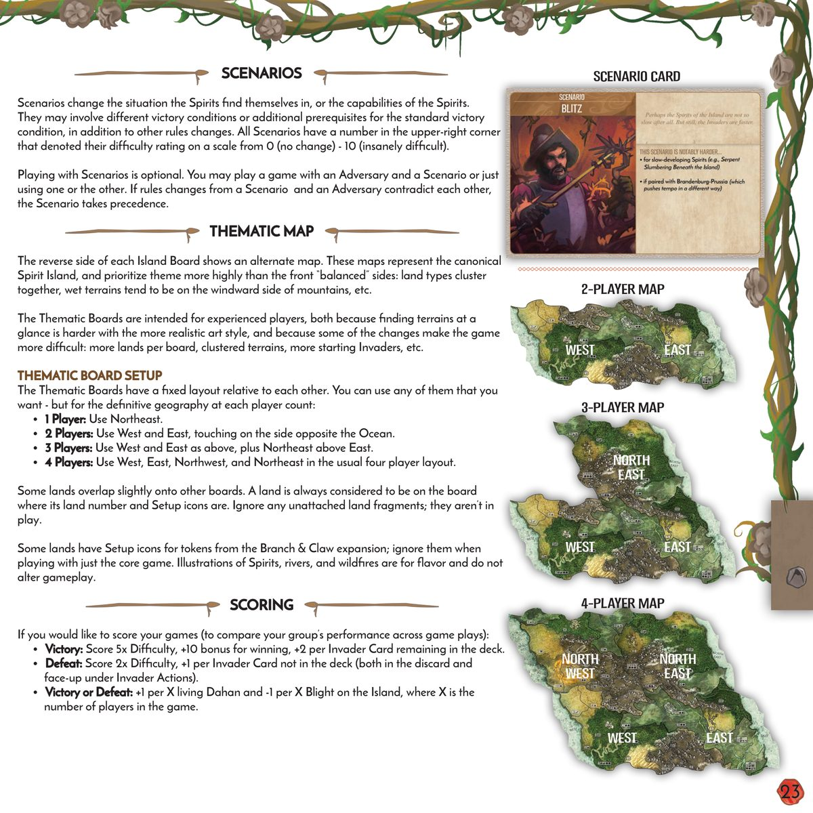
情景
情景(Scenario)改变灵所处的境况或灵的能力。除其他规则变化外,它们可能带来不同的胜利条件、或为标准胜利条件增加前置要求。所有情景右上角的数字是其难度评分,从 0(无变化)到 10(难得离谱)。
使用情景是可选项。你可以对手与情景同时使用,也可只用其一。若情景与对手的规则冲突,以情景为准。
主题地图
每块岛屿板块的背面是一张备用地图。这些地图展现「正统」的灵迹岛地理,比正面「平衡」面更重视主题:地形成片聚集、湿润地形多在山脉迎风面,等等。
主题板块面向有经验的玩家——一来写实画风下按地形找地块更难,二来部分改动会提高难度:每块板块地块更多、地形聚集、初始入侵者更多,等等。
主题板块设置
主题板块之间的相对布局是固定的,任取所需即可。各人数下的标准地理如下:
- 1 人:用「东北」。
- 2 人:用「西」与「东」,在背海一侧相接。
- 3 人:「西」「东」如上,再加「东北」置于「东」上方。
- 4 人:「西」「东」「西北」「东北」按通常四人布局摆放。
部分地块会略微延伸到其他板块上。一个地块永远属于印有其编号与设置图标的板块。忽略任何不接壤的碎片,它们不在游戏之内。
部分地块带有《枝与爪》扩展的设置图标,只用基础游戏时忽略它们。灵、河流与野火的插画是风味内容,不影响游戏。
〔图:主题板块四人布局示意——WEST 西、EAST 东、NORTHWEST 西北、NORTHEAST 东北,各板块带 1–10 编号网格;另有 2 人/3 人地图拼合示意〕
计分
若你想为对局计分(以比较你们团队各局的表现):
- 胜利:难度 × 5 分,获胜奖励 +10 分,入侵者牌堆每剩 1 张牌 +2 分。
- 失败:难度 × 2 分,入侵者牌堆外每有 1 张牌(弃牌堆与行动区面朝上的都算)+1 分。
- 无论胜负:每 X 名幸存达罕人 +1 分、岛上每 X 枚枯萎 −1 分,X 为本局玩家数。
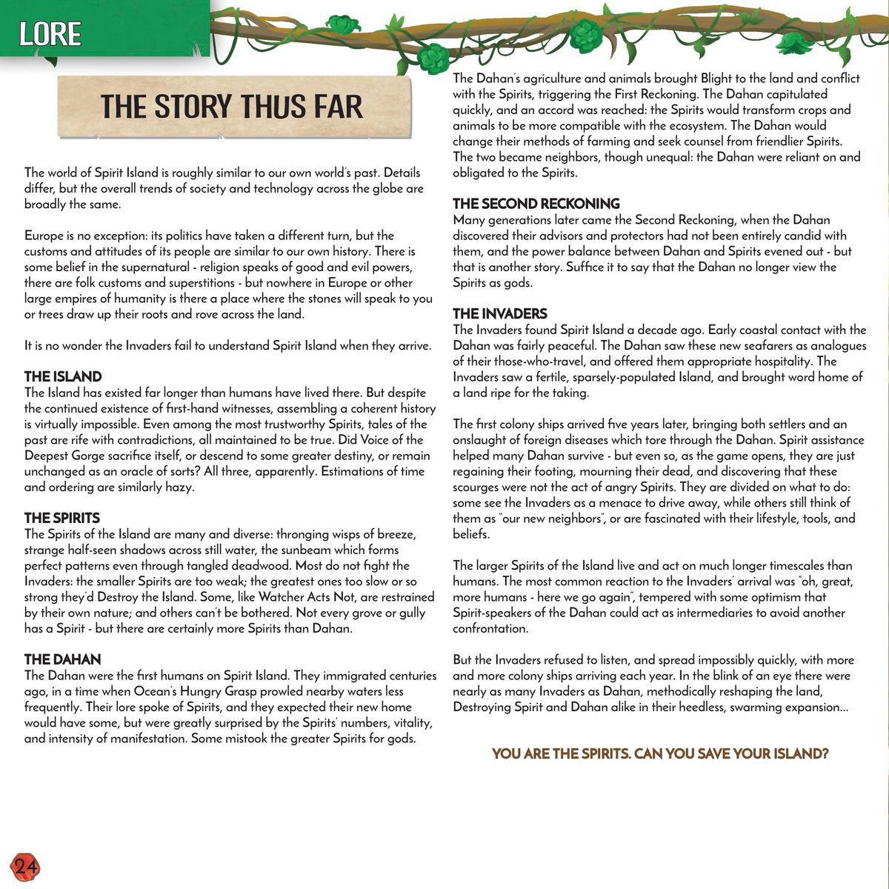
背景故事
迄今为止的故事
灵迹岛的世界大致类似我们自己世界的历史。细节各异,但全球社会与技术的大趋势基本相同。
欧洲也不例外:政治走向有所不同,但民众的习俗与观念和我们的历史相仿。那里对超自然有些许信仰——宗教谈论善恶之力,民间有习俗与迷信——但无论在欧洲还是人类其他大帝国,都没有一处地方石头会对你说话、树木会拔出根系在陆地上游走。
入侵者抵达时无法理解灵迹岛,也就不足为奇了。
岛屿 岛屿存在的时间远比人类定居更久。尽管「目击者」一直都在,想要拼出一段连贯的历史却几乎不可能。即便在最可信的灵之间,关于往昔的讲述也充满矛盾,且每一种都坚称为真。深渊之声(Voice of the Deepest Gorge)是牺牲了自己?是沉降向某种更宏大的使命?还是作为某种神谕原封不动?——看来三者皆是。对时间与先后的估计同样模糊。
灵 岛上的灵众多而多样:成群结队的微风游丝、静水上一掠而过的怪影、即使穿过纠缠枯木也织出完美图样的日光。大多数灵不与入侵者交战:小灵太弱,最强大的灵则太迟缓——或者强到会把岛屿一起毁掉。有些灵,如「守望者静观(Watcher Acts Not)」,受自身天性束缚;还有些灵则懒得理会。不是每片树林与沟壑都有灵——但灵肯定比达罕人多。
达罕人 达罕人是灵迹岛上的第一批人类。几个世纪前,在海洋饥渴之握(Ocean's Hungry Grasp)较少在附近海域游弋的年代,他们迁徙而来。他们的传说里讲过灵,也料到新家园会有一些——却被灵的数量、活力与显形的强烈程度大吃一惊。有人把强大的灵误认作神明。达罕人的农业与牲畜给土地带来了枯萎,也与灵爆发冲突,引发了「第一次清算」。达罕人很快屈服,双方达成协定:灵将改造作物与牲畜,使其更契合生态;达罕人则改变耕作方式,并向较友善的灵求教。两者成为邻居——尽管并不对等:达罕人依赖灵,并对灵负有义务。
第二次清算 许多个世代之后迎来了第二次清算:达罕人发现他们的顾问与保护者并未完全坦诚,达罕人与灵之间的力量对比就此拉平——但那是另一个故事了。只需说一句:达罕人不再把灵视作神明。
入侵者 入侵者十年前找到灵迹岛。早期与达罕人的海岸接触相当和平。达罕人把这些新海民视作自己的「行者」同类,给予了相应的款待。入侵者看到的是一座肥沃而人烟稀少的岛屿,并捎话回国:这片土地唾手可得。
五年后,第一批殖民船队抵达,带来移民,也带来席卷达罕人的外来疾病狂潮。灵的援手救下了许多达罕人——但即便如此,当游戏开场时,他们才刚刚站稳脚跟,哀悼死者,并发现这些灾殃并非愤怒的灵所为。他们对何去何从意见分裂:有人视入侵者为必须驱逐的威胁,也有人仍把他们当作「新邻居」,或着迷于他们的生活方式、工具与信仰。
岛上较大的灵以远比人类漫长的时间尺度生活与行动。对入侵者到来最普遍的反应是「哦又来了,更多人类——又要重演了」,间或夹杂一丝乐观:也许达罕人中的「灵语者」能充当中间人,避免又一场对峙。
但入侵者拒绝倾听,以不可思议的速度扩张,殖民船一年比一年多。转瞬之间,入侵者人数已几乎赶到达罕人,一面按部就班地重塑着土地,一面在他们漫不经心、蜂拥而至的扩张中毁灭着灵与达罕人……
你们就是灵。你们能拯救自己的岛屿吗?
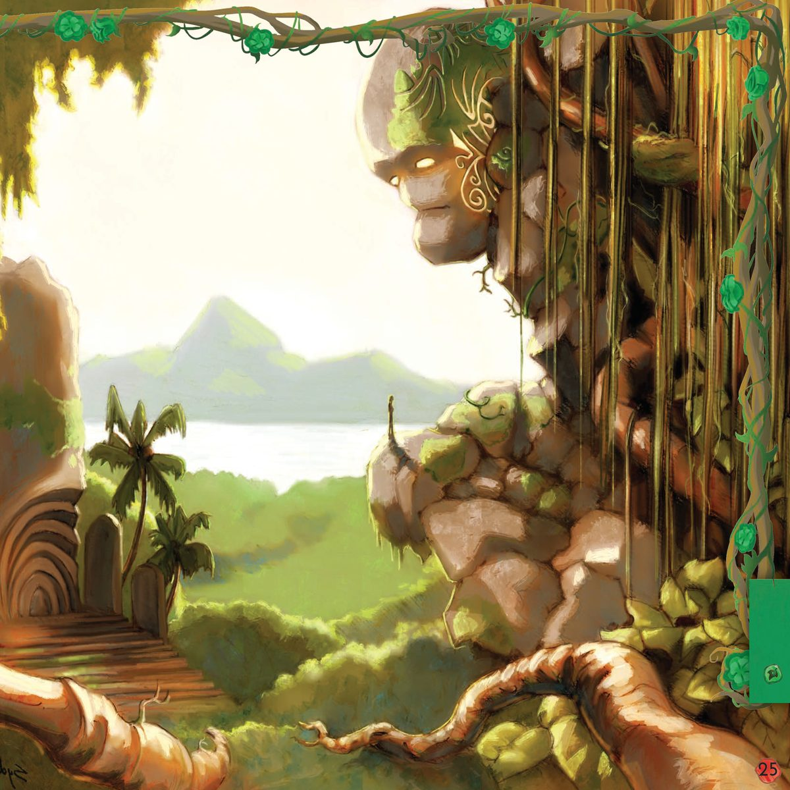
〔图:全页插画——热带岛屿景观,右侧为长满青苔、目光发光的巨石灵形象,背景有山脉、水域、棕榈树与石阶遗迹〕
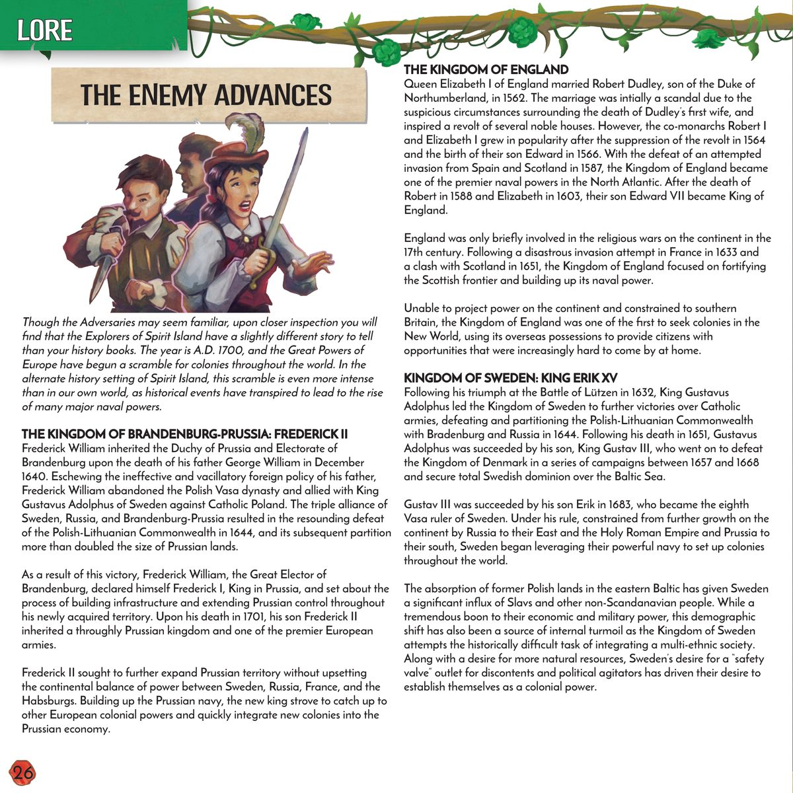
敌人的进击
对手们看似熟悉,但细看之下你会发现,灵迹岛的探索者们讲的是一个与你的历史书略有不同的故事。这一年是公元 1700 年,欧洲列强开始了争夺全世界殖民地的竞赛。在灵迹岛的架空历史中,这场竞赛比我们的世界更加激烈——诸多历史事件的走向,造就了多个主要海上强权的崛起。
勃兰登堡-普鲁士王国:腓特烈二世
1640 年 12 月,腓特烈·威廉在其父格奥尔格·威廉死后,继承了普鲁士公国与勃兰登堡选帝侯领。他摒弃了父亲摇摆低效的外交政策,抛弃波兰的瓦萨王朝,与瑞典国王古斯塔夫·阿道夫结盟对抗天主教波兰。瑞典、俄罗斯与勃兰登堡-普鲁士的三方同盟于 1644 年大败波兰-立陶宛联邦,随后的瓜分让普鲁士领土翻了一倍有余。
凭借这场胜利,勃兰登堡的「大选帝侯」腓特烈·威廉自立为普鲁士国王腓特烈一世,着手在新获得的领土上修建基础设施、扩展普鲁士的控制。1701 年他去世后,其子腓特烈二世继承了一个彻头彻尾的普鲁士王国,以及欧洲最精锐的陆军之一。
腓特烈二世寻求进一步扩张普鲁士领土,同时不去打破瑞典、俄罗斯、法国与哈布斯堡之间的大陆均势。新国王建设普鲁士海军,力图追赶其他欧洲殖民强权,并把新殖民地迅速整合进普鲁士经济。
英格兰王国
1562 年,英格兰女王伊丽莎白一世嫁给诺森伯兰公爵之子罗伯特·达德利。这桩婚姻起初因达德利前妻之死的可疑情形而饱受非议,还激起数个贵族家族叛乱。然而,1564 年叛乱被镇压、1566 年他们的儿子爱德华出生后,共治君主罗伯特一世与伊丽莎白一世的声望日隆。1587 年,西班牙与苏格兰的入侵企图被击退,英格兰王国成为北大西洋首屈一指的海上强权之一。罗伯特于 1588 年、伊丽莎白于 1603 年去世后,其子爱德华七世成为英格兰国王。
17 世纪,英格兰只是短暂卷入大陆的宗教战争。1633 年入侵法国惨败、1651 年与苏格兰冲突之后,英格兰王国专注于巩固苏格兰边境、建设海军力量。
由于无力向大陆投射力量、被限制在不列颠南部,英格兰王国是最早到新大陆寻找殖民地的国家之一——用海外领地为国民提供在本国越来越难得到的机会。
瑞典王国:埃里克十五世
1632 年在吕岑战役大捷之后,古斯塔夫·阿道夫国王率领瑞典王国接连战胜天主教军队,于 1644 年与勃兰登堡、俄罗斯一同击败并瓜分了波兰-立陶宛联邦。1651 年他去世后,其子古斯塔夫三世继位,在 1657 至 1668 年间的一系列战役中击败丹麦王国,确立了瑞典对波罗的海的完全统治。
1683 年,古斯塔夫三世之子埃里克继位,成为瑞典第八位瓦萨王朝君主。在他的治下,东有俄罗斯、南有神圣罗马帝国与普鲁士,大陆扩张受限的瑞典开始以其强大海军在全球设立殖民地。
对波罗的海东部前波兰土地的吸收,给瑞典带来了大量斯拉夫人及其他非斯堪的纳维亚人口。这极大增强了瑞典的经济与军事实力,但这一人口结构变化也成了内乱的根源——瑞典王国正尝试整合多族群社会这一历史性难题。除对自然资源的渴望外,瑞典也想为不满者与政治鼓动者找一个「安全阀」出口,这同样驱使它跻身殖民强权之列。
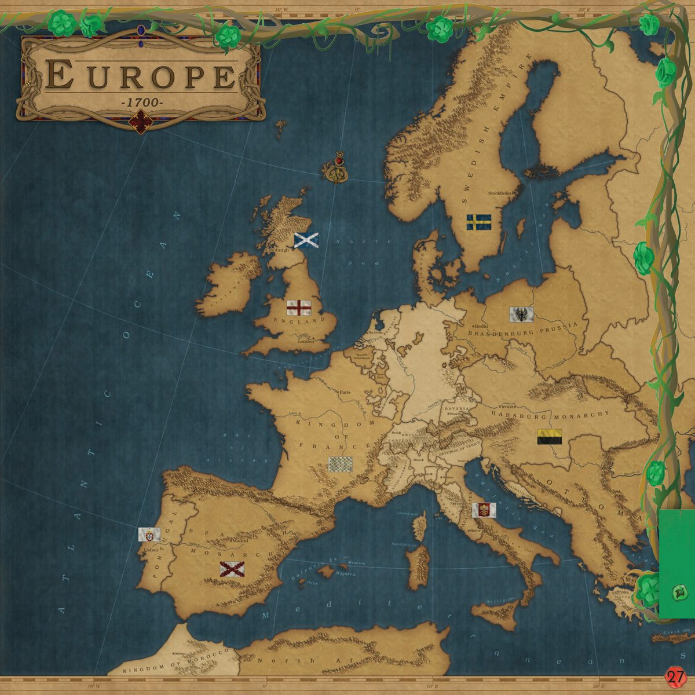
〔图:仿古风格的世界地图插画,标注 "-1700-",展示入侵者的欧洲故土——瑞典帝国、英格兰、勃兰登堡-普鲁士、法兰西王国、西班牙君主国、葡萄牙等,以及大西洋、北海、波罗的海、地中海等海域〕
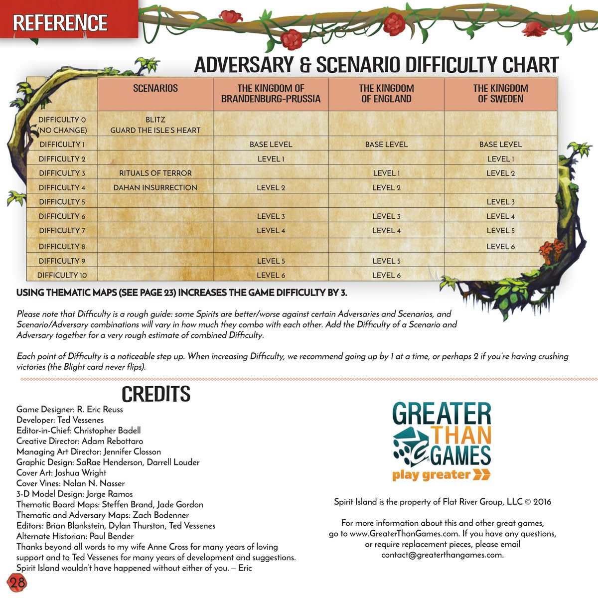
参考
对手与情景难度表
| 难度 | 情景 | 勃兰登堡-普鲁士 | 英格兰 | 瑞典 |
|---|---|---|---|---|
| 难度 0(无变化) | — | — | — | — |
| 难度 1 | 闪击 Blitz · 守护岛屿之心 Guard the Isle's Heart | 基础等级 | 基础等级 | 基础等级 |
| 难度 2 | — | 等级 1 | — | 等级 1 |
| 难度 3 | 恐惧仪式 Rituals of Terror | — | 等级 1 | 等级 2 |
| 难度 4 | 达罕人起义 Dahan Insurrection | 等级 2 | 等级 2 | — |
| 难度 5 | — | — | — | 等级 3 |
| 难度 6 | — | 等级 3 | 等级 3 | 等级 4 |
| 难度 7 | — | 等级 4 | 等级 4 | 等级 5 |
| 难度 8 | — | — | — | 等级 6 |
| 难度 9 | — | 等级 5 | 等级 5 | — |
| 难度 10 | — | 等级 6 | 等级 6 | — |
- 使用主题地图(见第 23 页)使游戏难度 +3。
- 请注意:难度只是粗略指引——某些灵对特定对手与情景有优势或劣势,情景与对手的组合强度也千差万别。把情景与对手的难度相加,可得到组合难度的大致估计。
- 每一点难度都是显著的一步。提高难度时,我们建议一次加 1 点;若你们赢得摧枯拉朽(枯萎牌从未翻面),也可以一次加 2 点。
制作名单
- 游戏设计:R. Eric Reuss
- 开发:Ted Vessenes
- 主编:Christopher Badell
- 创意总监:Adam Rebottaro
- 美术总监(管理):Jennifer Closson
- 平面设计:SaRae Henderson、Darrell Louder
- 封面插画:Joshua Wright
- 封面藤蔓:Nolan N. Nasser
- 立体模型设计:Jorge Ramos
- 主题版图地图:Steffen Brand、Jade Gordon
- 主题与对手地图:Zach Bodenner
- 编辑:Brian Blankstein、Dylan Thurston、Ted Vessenes
- 架空历史考订:Paul Bender
「无限感谢我的妻子 Anne Cross 多年来的挚爱支持,感谢 Ted Vessenes 多年来的开发与建议。没有你们两位,就没有灵迹岛。——Eric」
灵迹岛版权归 Flat River Group, LLC © 2016 所有。关于本作及其他优秀游戏的更多信息,请访问 www.GreaterThanGames.com。如有任何问题或需要补件,请致信 contact@greaterthangames.com。
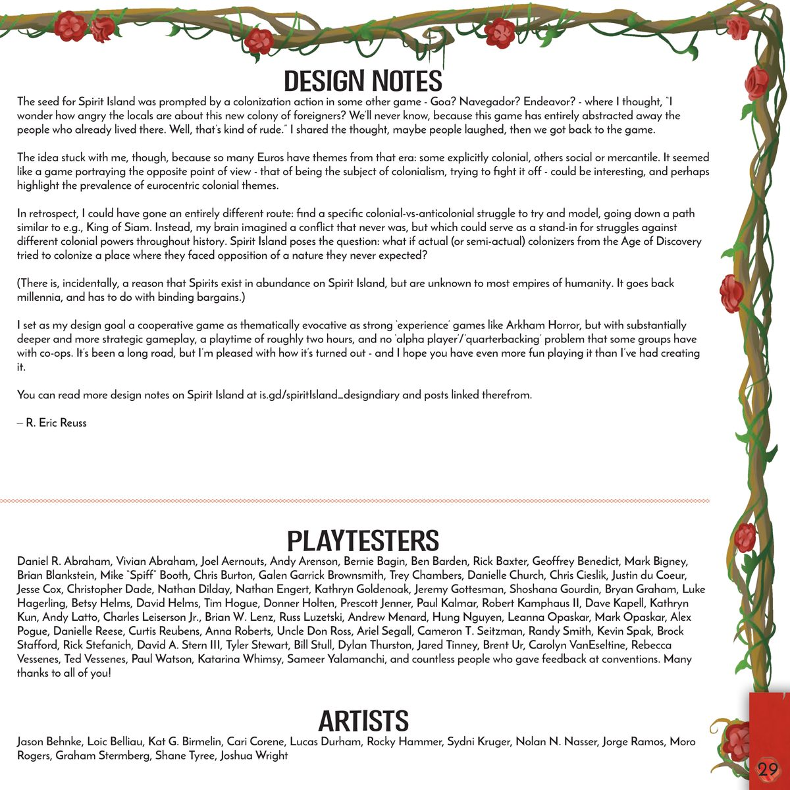
设计笔记
灵迹岛的种子,萌发于我在另一款游戏里看到的一个殖民动作——是《果阿》?《航海家》?《奋进号》?——当时我想:「真想知道当地的居民对这些外来殖民者有多愤怒?我们永远不会知道,因为这款游戏把原本住在那里的人彻底抽象掉了。嗯,这有点失礼。」我分享了这个想法,大家也许笑了,然后我们继续玩。
这个想法一直留在我心里,因为有太多欧式桌游以那个时代的题材为背景:有的直白殖民,有的社会或商贸。做一款展现相反视角的游戏——成为殖民的对象、努力反抗——似乎会很有意思,或许还能凸显欧式中心殖民题材的普遍性。
回想起来,我本可以走一条完全不同的路:选定一场具体的殖民与反殖民斗争去建模,走《暹罗之王》那样的路线。但我的脑子构想出一场从未存在过的冲突——它可以充当历史上反抗各殖民强权斗争的替身。灵迹岛提出了一个问题:如果大发现时代真实的(或半真实的)殖民者,试图殖民一个他们遭遇了从未预料到的抵抗形式的地方,会怎样?
(顺带一提,灵之所以在灵迹岛上大量存在、却不为人类大多数帝国所知,是有原因的。那要追溯到几千年前,与约束性的契约有关。)
我给自己定的设计目标是:一款像《诡镇奇谈》那样主题浓郁的合作「体验」游戏,同时具有深得多、策略性高得多的玩法,游戏时长约两小时,并且不存在某些团队玩合作游戏时的「独裁玩家」/「指挥四分卫」问题。这条路走了很久,但我对成果很满意——也希望你们玩它的乐趣,更胜我创造它的乐趣。
更多设计笔记见 is.gd/spiritIsland_designdiary 及其链接的帖子。
—— R. Eric Reuss
试玩人员
Daniel R. Abraham、Vivian Abraham、Joel Aernouts、Andy Arenson、Bernie Bagin、Ben Barden、Rick Baxter、Geoffrey Benedict、Mark Bigney、Brian Blankstein、Mike "Spiff" Booth、Chris Burton、Galen Garrick Brownsmith、Trey Chambers、Danielle Church、Chris Cieslik、Justin du Coeur、Jesse Cox、Christopher Dade、Nathan Dilday、Nathan Engert、Kathryn Goldenoak、Jeremy Gottesman、Shoshana Gourdin、Bryan Graham、Luke Hagerling、Betsy Helms、David Helms、Tim Hogue、Donner Holten、Prescott Jenner、Paul Kalmar、Robert Kamphaus II、Dave Kapell、Kathryn Kun、Andy Latto、Charles Leiserson Jr.、Brian W. Lenz、Russ Luzetski、Andrew Menard、Hung Nguyen、Leanna Opaskar、Mark Opaskar、Alex Pogue、Danielle Reese、Curtis Reubens、Anna Roberts、Uncle Don Ross、Ariel Segall、Cameron T. Seitzman、Randy Smith、Kevin Spak、Brock Stafford、Rick Stefanich、David A. Stern III、Tyler Stewart、Bill Stull、Dylan Thurston、Jared Tinney、Brent Ur、Carolyn VanEseltine、Rebecca Vessenes、Ted Vessenes、Paul Watson、Katarina Whimsy、Sameer Yalamanchi,以及无数在展会上给出反馈的玩家。谨向各位致以诚挚谢意!
画师
Jason Behnke、Loic Belliau、Kat G. Birmelin、Cari Corene、Lucas Durham、Rocky Hammer、Sydni Kruger、Nolan N. Nasser、Jorge Ramos、Moro Rogers、Graham Stermberg、Shane Tyree、Joshua Wright
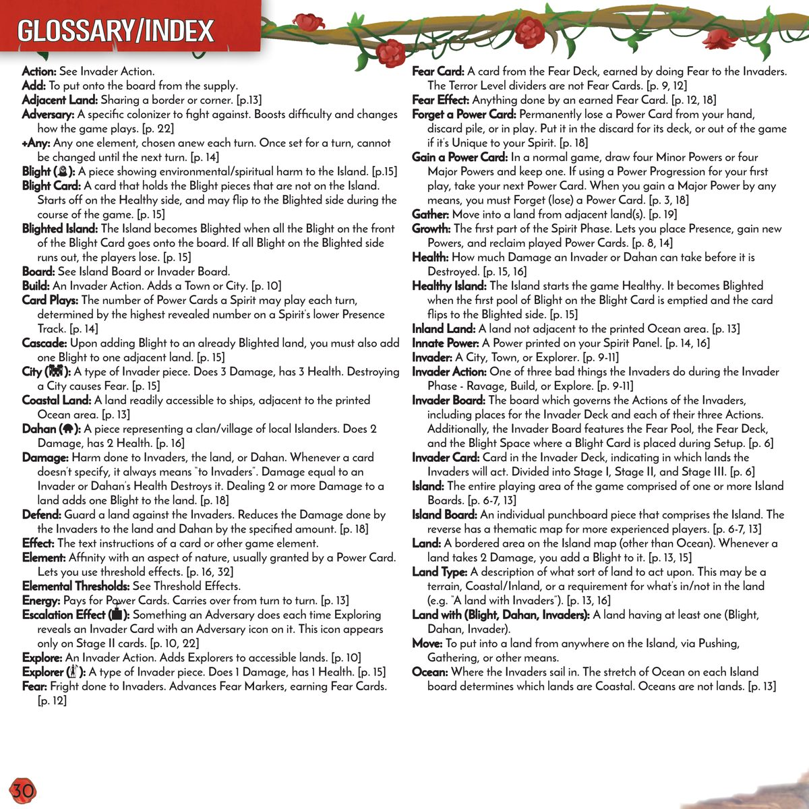
术语表/索引
- 行动(Action):见「入侵者行动」。
- 添加(Add):从补给区放到版图上。
- 相邻地块(Adjacent Land):共有边界或角落。〔第 13 页〕
- 对手(Adversary):与之对抗的特定殖民者。提升难度并改变游戏方式。〔第 22 页〕
- +任意(+Any):任一元素,每回合重新选择。一回合内一经选定,到下回合前不可更改。〔第 14 页〕
- 枯萎(Blight)〔图标〕:表示岛屿受到的环境/灵性伤害的棋子。〔第 15 页〕
- 枯萎牌(Blight Card):承载不在岛上的枯萎棋子的牌。开局「健康岛屿」面朝上,游戏中可能翻到「枯萎岛屿」面。〔第 15 页〕
- 枯萎岛屿(Blighted Island):当枯萎牌正面的枯萎全部上版后,岛屿变为枯萎。若枯萎面的枯萎也耗尽,玩家落败。〔第 15 页〕
- 板块(Board):见「岛屿板块」或「入侵者版图」。
- 建造(Build):一种入侵者行动,添加城镇或城市。〔第 10 页〕
- 出牌数(Card Plays):灵每回合可打出的力量牌数,由灵下方临在轨道最左侧未被覆盖的数字决定。〔第 14 页〕
- 级联(Cascade):向已有枯萎的地块添加枯萎时,必须再向一个相邻地块添加 1 枚枯萎。〔第 15 页〕
- 城市(City)〔图标〕:一类入侵者棋子。造成 3 点伤害,生命值 3。消灭城市产生恐惧。〔第 15 页〕
- 沿海地块(Coastal Land):船只易于抵达的地块,与印刷海洋区相邻。〔第 13 页〕
- 达罕人(Dahan)〔图标〕:代表当地岛民一个氏族/村落的棋子。造成 2 点伤害,生命值 2。〔第 16 页〕
- 伤害(Damage):对入侵者、土地或达罕人造成的损害。凡牌面未指明对象时,一律指「对入侵者」。达到入侵者或达罕人生命值的伤害将其消灭。对地块造成 2 点或更多伤害即向该地块添加 1 枚枯萎。〔第 18 页〕
- 防御(Defend):守护地块免受入侵者侵害。按指定数值减少入侵者对地块与达罕人造成的伤害。〔第 18 页〕
- 效果(Effect):一张牌或其他游戏元素的文字指示。
- 元素(Element):与自然某一方面的亲和,通常由力量牌提供。让你能够使用阈值效果。〔第 16、32 页〕
- 元素阈值(Elemental Thresholds):见「阈值效果」。
- 能量(Energy):支付力量牌的费用。回合间保留。〔第 13 页〕
- 升级效果(Escalation Effect)〔旗帜图标〕:对手在探索翻开带对手图标的入侵者牌时执行的效果。该图标只出现在阶段二牌上。〔第 10、22 页〕
- 探索(Explore):一种入侵者行动,向可及地块添加探索者。〔第 10 页〕
- 探索者(Explorer)〔图标〕:一类入侵者棋子。造成 1 点伤害,生命值 1。〔第 15 页〕
- 恐惧(Fear):对入侵者造成的惊吓。推进恐惧标记,赢得恐惧牌。〔第 12 页〕
- 恐惧牌(Fear Card):恐惧牌堆中的牌,通过对入侵者造成恐惧赢得。恐怖等级分隔片不是恐惧牌。〔第 9、12 页〕
- 恐惧效果(Fear Effect):赢得的恐惧牌所执行的任何效果。〔第 12、18 页〕
- 遗忘力量牌(Forget a Power Card):从手牌、弃牌堆或场上永久失去一张力量牌。放入其牌堆的弃牌堆;若是你的独特力量,则移出游戏。〔第 18 页〕
- 获得力量牌(Gain a Power Card):常规游戏中,从次要力量或主要力量抽 4 张留 1 张。首次游玩使用力量进阶时,拿取下一张力量牌。无论以何种方式获得主要力量,都必须遗忘(失去)一张力量牌。〔第 3、18 页〕
- 聚拢(Gather):从相邻地块移入某地块。〔第 19 页〕
- 成长(Growth):灵阶段的第一部分。让你放置临在、获得新力量、回收打出的力量牌。〔第 8、14 页〕
- 生命值(Health):入侵者或达罕人被消灭前能承受的伤害量。〔第 15、16 页〕
- 健康岛屿(Healthy Island):岛屿开局为健康。当枯萎牌上第一池枯萎耗尽、牌翻到枯萎面后,岛屿变为枯萎。〔第 15 页〕
- 内陆地块(Inland Land):不与印刷海洋区相邻的地块。〔第 13 页〕
- 天赋力量(Innate Power):印在灵面板上的力量。〔第 14、16 页〕
- 入侵者(Invader):城市、城镇或探索者。〔第 9–11 页〕
- 入侵者行动(Invader Action):入侵者阶段的三件坏事之一——肆虐、建造或探索。〔第 9–11 页〕
- 入侵者版图(Invader Board):掌控入侵者行动的版图,含入侵者牌堆区与三个行动区,另有恐惧池、恐惧牌堆与放置枯萎牌的枯萎区。〔第 6 页〕
- 入侵者牌(Invader Card):入侵者牌堆中的牌,标示入侵者将在哪些地块行动。分为阶段一、二、三。〔第 6 页〕
- 岛屿(Island):整座游戏区域,由一块或多块岛屿板块组成。〔第 6–7、13 页〕
- 岛屿板块(Island Board):组成岛屿的单块板件。背面是供有经验玩家使用的主题地图。〔第 6–7、13 页〕
- 地块(Land):岛屿版图上有边界的区域(海洋除外)。地块受到 2 点伤害即添加 1 枚枯萎。〔第 13、15 页〕
- 地块类型(Land Type):对行动目标地块的描述。可以是地形、沿海/内陆,或对地块内容物的要求(如「有入侵者的地块」)。〔第 13、16 页〕
- 有(枯萎/达罕人/入侵者)的地块(Land with…):至少含有 1 个该类事物的地块。
- 移动(Move):经推离、聚拢或其他方式,从岛上任意位置放入某地块。
- 海洋(Ocean):入侵者乘船驶入之处。每块岛屿板块上的海洋带决定哪些地块是沿海。海洋不是地块。〔第 13 页〕
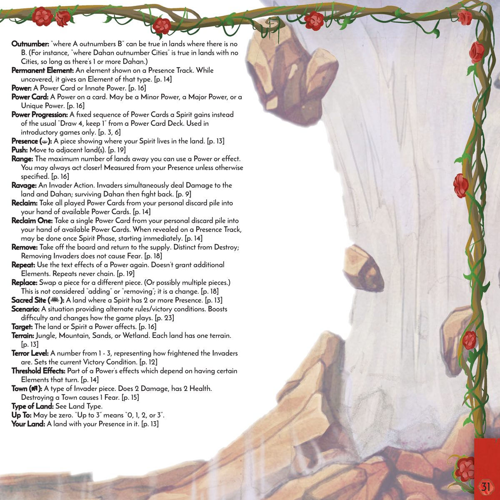
(术语表续)
- 数量超过(Outnumber):「A 数量超过 B」在没有 B 的地块也可能成立。(例如,「达罕人数量超过城市」在没有城市的地块也成立,只要有 1 名或更多达罕人。)
- 永久元素(Permanent Element):印在临在轨道上的元素。只要未被覆盖,便提供 1 个该类型元素。〔第 14 页〕
- 力量(Power):力量牌或天赋力量。〔第 16 页〕
- 力量牌(Power Card):以卡牌形式存在的力量。可以是次要力量、主要力量或独特力量。〔第 16 页〕
- 力量进阶(Power Progression):灵获得力量牌的固定序列,取代通常的「抽 4 留 1」。仅用于入门对局。〔第 3、6 页〕
- 临在(Presence)〔图标〕:表示你的灵在该地块生活的棋子。〔第 13 页〕
- 推离(Push):移到相邻地块。〔第 19 页〕
- 射程(Range):你使用力量或效果所能触及的最大地块数。你总可以更近!从你的临在起算,另有说明除外。〔第 16 页〕
- 肆虐(Ravage):一种入侵者行动。入侵者同时伤害地块与达罕人;幸存的达罕人随后反击。〔第 9 页〕
- 回收(Reclaim):把你打出的全部力量牌从个人弃牌堆收回手牌。〔第 14 页〕
- 回收一张(Reclaim One):把 1 张力量牌从个人弃牌堆收回手牌。临在轨道上的该格未被覆盖时,每个灵阶段可执行一次,自揭开当回合起即可。〔第 14 页〕
- 移除(Remove):从版图取下并放回补给区。与「消灭」不同;移除入侵者不产生恐惧。〔第 18 页〕
- 重复(Repeat):再次使用力量的文字效果。不给予额外元素。重复不能连锁。〔第 19 页〕
- 替换(Replace):把一枚棋子换成不同的棋子(也可能换成多枚)。这不算「添加」也不算「移除」,而是一种改变。〔第 18 页〕
- 圣域(Sacred Site)〔图标〕:一位灵拥有 2 枚或更多临在的地块。〔第 13 页〕
- 情景(Scenario):提供替代规则/胜利条件的情境。提升难度并改变游戏方式。〔第 23 页〕
- 目标(Target):力量所影响的地块或灵。〔第 16 页〕
- 地形(Terrain):丛林、山地、沙地或湿地。每个地块有一种地形。〔第 13 页〕
- 恐怖等级(Terror Level):1–3 的数字,表示入侵者的恐惧程度。决定当前胜利条件。〔第 12 页〕
- 阈值效果(Threshold Effects):力量效果中依赖当回合拥有特定元素的部分。〔第 14 页〕
- 城镇(Town)〔图标〕:一类入侵者棋子。造成 2 点伤害,生命值 2。消灭城镇产生 1 点恐惧。〔第 15 页〕
- 地块类型(Type of Land):见「地块类型」。
- 至多(Up To):可以为零。「至多 3」指「0、1、2 或 3」。
- 你的地块(Your Land):含有你临在的地块。〔第 13 页〕
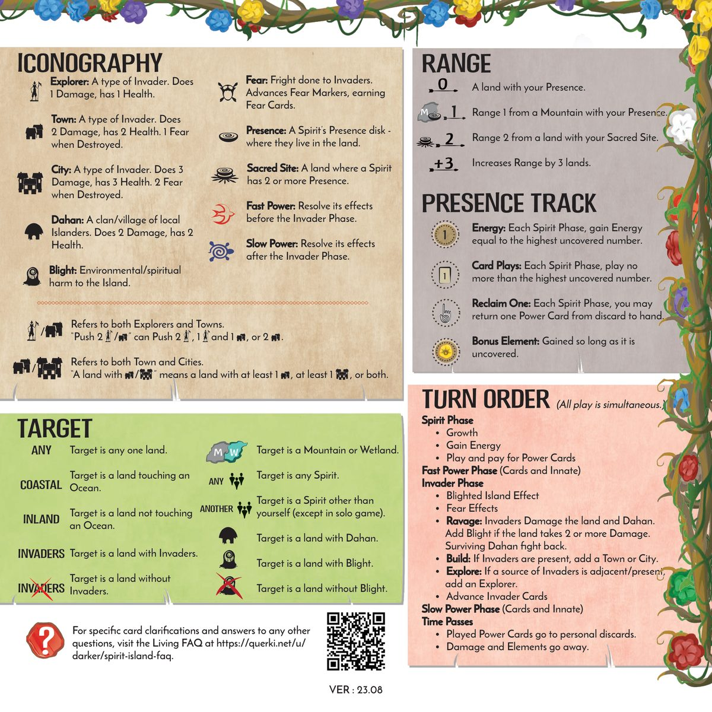
图标参考
〔图:棋子图标〕
- 探索者〔图标〕:一类入侵者。造成 1 点伤害,生命值 1。
- 城镇〔图标〕:一类入侵者。造成 2 点伤害,生命值 2。被消灭时产生 1 点恐惧。
- 城市〔图标〕:一类入侵者。造成 3 点伤害,生命值 3。被消灭时产生 2 点恐惧。
- 达罕人〔图标〕:当地岛民的氏族/村落。造成 2 点伤害,生命值 2。
- 枯萎〔图标〕:岛屿受到的环境/灵性伤害。
- 恐惧〔图标〕:对入侵者造成的惊吓。推进恐惧标记,赢得恐惧牌。
- 临在〔图标〕:灵的临在圆盘——灵在该地块生活的标志。
- 圣域〔图标〕:一位灵拥有 2 枚或更多临在的地块。
- 迅捷力量〔闪电图标〕:在入侵者阶段之前结算效果。
- 迟缓力量〔月亮图标〕:在入侵者阶段之后结算效果。
〔图:组合图标〕
- 探索者/城镇组合图标〔图标〕:同时指探索者与城镇。「推离 2 组该图标」可以推离 2 名探索者、1 名探索者+1 座城镇,或 2 座城镇。
- 城镇/城市组合图标〔图标〕:同时指城镇与城市。「有该图标组合的地块」指至少有 1 座城镇、至少 1 座城市、或两者兼有的地块。
〔图:目标栏图标(TARGET)〕
- 任意(ANY)〔图标〕:目标为任意一个地块。
- 沿海(COASTAL)〔图标〕:目标为与海洋相接的地块。
- 内陆(INLAND)〔图标〕:目标为不与海洋相接的地块。
- 有入侵者(INVADERS)〔图标〕:目标为有入侵者的地块。
- 无入侵者〔图标〕:目标为没有入侵者的地块。
- 山地+湿地〔图标〕:目标为山地或湿地地块。
- 任意灵(ANY)〔图标〕:目标为任意一位灵。
- 另一灵(ANOTHER)〔图标〕:目标为非你本人的灵(单人游戏除外)。
- 有达罕人〔图标〕:目标为有达罕人的地块。
- 有枯萎〔图标〕:目标为有枯萎的地块。
- 无枯萎〔图标〕:目标为没有枯萎的地块。
〔图:射程图标(RANGE)〕
- 〔图标〕:你拥有临在的地块。
- 〔图标〕:距你某个有临在的山地地块射程 1。
- 〔图标〕:距你某个圣域射程 2。
- 〔+3 图标〕:射程增加 3 个地块。
〔图:临在轨道(PRESENCE TRACK)〕
- 能量:每个灵阶段,获得等同于最左侧未被覆盖数字的能量。
- 出牌数:每个灵阶段,打出不超过最左侧未被覆盖数字的牌。
- 回收一张:每个灵阶段,可以把 1 张力量牌从弃牌堆收回手牌。
- 奖励元素:只要未被覆盖即持续获得。
〔图:回合顺序(TURN ORDER)——所有行动同时进行〕
- 灵阶段:成长 → 获得能量 → 打出并支付力量牌
- 迅捷力量阶段(力量牌与天赋力量)
- 入侵者阶段:枯萎岛屿效果 → 恐惧效果 → 肆虐(入侵者伤害地块与达罕人;地块受到 2 点或更多伤害即添加枯萎;幸存达罕人反击) → 建造(有入侵者则添加城镇或城市) → 探索(相邻/同格有入侵者来源则添加探索者) → 推进入侵者牌
- 迟缓力量阶段(力量牌与天赋力量)
- 时光流逝:打出的力量牌进入个人弃牌堆;伤害与元素消失。
欲查询具体卡牌的澄清与任何其他问题,请访问官方持续更新的 FAQ:https://querki.net/u/darker/spirit-island-faq
〔注:本规则书版本号 VER 23.08〕